第二回 · 微分
第一节 · 连续函数
2.1.1 连续和间断
所谓连续函数, 直白的说就是能笔不离开纸面一气画出来的函数, 下面我们就来运用极限的概念把这个连续的直观给数学化.
函数在某一点的连续
若 \displaystyle \lim_{x\rightarrow x_0}f(x) = f(x_0), 则称 f(x) 在 x_0 处连续.
连续函数
如果函数在某个区域上每一点都连续, 则称 f(x) 是该区域上的连续函数.
讨论函数 f(x) = |x| 的连续性。
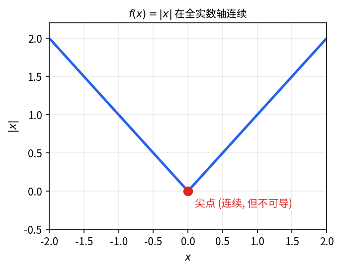
分 x_0 > 0、x_0 < 0、x_0 = 0 三种情况，验证各点处 \lim_{x\to x_0}f(x) = f(x_0) 成立。
函数 f(x) = |x| 在 (-\infty, +\infty) 上处处连续。
- 当 x_0 > 0 时，在 x_0 的某邻域内 f(x) = x，故 \lim_{x\to x_0}|x| = x_0 = f(x_0)，连续。
- 当 x_0 < 0 时，在 x_0 的某邻域内 f(x) = -x，故 \lim_{x\to x_0}|x| = -x_0 = f(x_0)，连续。
- 当 x_0 = 0 时，左极限 \lim_{x\to 0^-}|x| = \lim_{x\to 0^-}(-x) = 0，右极限 \lim_{x\to 0^+}|x| = \lim_{x\to 0^+}x = 0，且 f(0)=0，故连续。
因此 f(x) = |x| 在 (-\infty, +\infty) 上连续。
讨论函数 \displaystyle f(x) = \frac{1}{|x|} 的连续性，指出间断点（若有）。
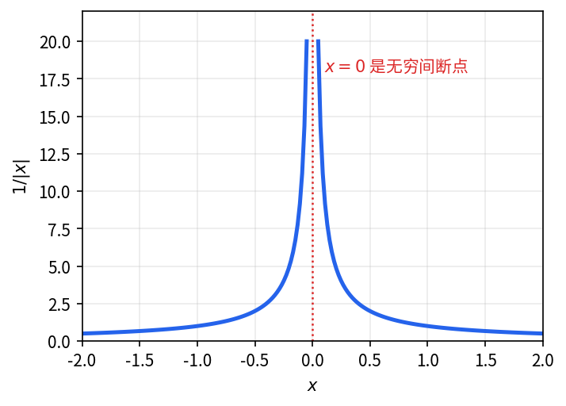
分析 f(x) 的定义域，找出使 f(x) 无定义的点，再检验该点处的极限行为。
f(x) = \dfrac{1}{|x|} 在 x = 0 处无定义，因此 x=0 是间断点。
- 当 x_0 \neq 0 时，|x| 在 x_0 附近连续且非零，故 f(x) = \dfrac{1}{|x|} 在所有 x_0 \neq 0 处连续。
- 当 x \to 0 时，|x| \to 0^+，故 \dfrac{1}{|x|} \to +\infty，极限不存在（趋于无穷大）。
因此，f(x) 在 (-\infty, 0) \cup (0, +\infty) 上连续，在 x = 0 处不连续（第二类间断点，无穷间断点）。
不连续的函数就是间断函数. 间断函数一定有某处是不连续的, 造成不连续的原因很多, 其中有些间断点还能够被挽救回来变成连续的 (可去间断点), 有些则挽救不回来.
讨论函数 \displaystyle f(x) = \frac{\sin x}{x} 的连续性。若存在间断点，判断其类型，并说明能否通过补充定义使其成为连续函数。
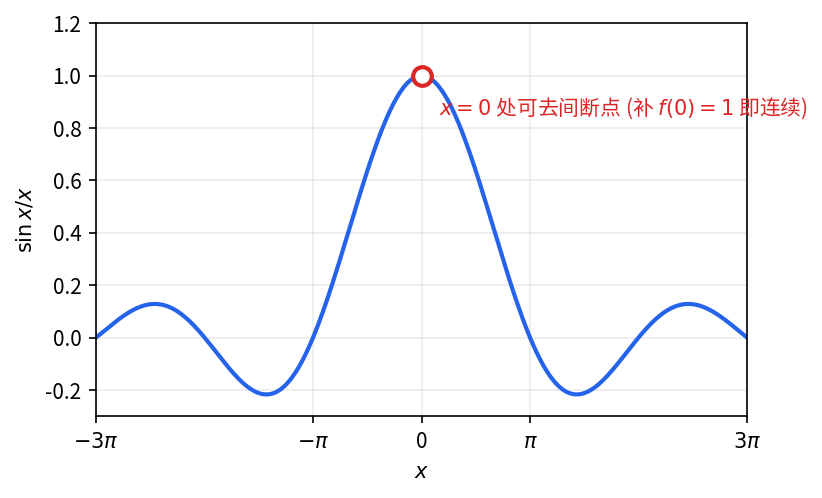
f(x) 在 x=0 处没有定义，但计算 \lim_{x\to 0}\dfrac{\sin x}{x} 可以判断该间断点是否可去。
f(x) = \dfrac{\sin x}{x} 在 x=0 处无定义，故 x=0 是间断点。
由重要极限：
\lim_{x\rightarrow 0} \frac{\sin x}{x} = 1.
由于极限存在但函数在该点无定义，x=0 是可去间断点。
只要令 f(0) = 1，即补充定义
\tilde{f}(x) = \begin{cases} \dfrac{\sin x}{x}, & x \neq 0, \\ 1, & x = 0, \end{cases}
则 \tilde{f}(x) 在 (-\infty, +\infty) 上处处连续。
讨论函数 f(x) = \sin\dfrac{1}{x} 在 x=0 处的连续性。若不连续，判断间断点类型，并说明能否通过补充定义使其连续。
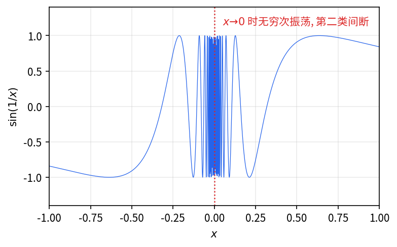
考察 x \to 0 时 \sin\dfrac{1}{x} 的极限行为：取特殊数列 x_n \to 0 使得 \sin\dfrac{1}{x_n} 取不同值，说明极限不存在。
f(x) = \sin\dfrac{1}{x} 在 x=0 处无定义，故 x=0 是间断点。
当 x \to 0 时，\dfrac{1}{x} \to \infty，\sin\dfrac{1}{x} 在 -1 和 1 之间无限振荡，极限不存在。
例如，取 x_n = \dfrac{1}{n\pi}，则 \sin\dfrac{1}{x_n} = \sin(n\pi) = 0；取 x_n = \dfrac{2}{(4n+1)\pi}，则 \sin\dfrac{1}{x_n} = 1。
因此 x=0 是振荡间断点（第二类间断点），无法通过补充定义一个点值使 f(x) 在 x=0 处连续。
- 左连续(注意极限记号下方的 - 号)
\displaystyle \lim_{x\rightarrow x_0^-} f(x) = A \iff \forall \varepsilon > 0, \exists \delta>0, s. t., |f(x) - A| < \varepsilon if -\delta < x-x_0 < 0.
- 右连续(注意极限记号下方的 + 号)
\displaystyle \lim_{x\rightarrow x_0^+} f(x) = A \iff \forall \varepsilon > 0, \exists \delta>0, s. t., |f(x) - A| < \varepsilon if 0 < x-x_0 < \delta.
造成函数 f(x) 在 x=x_0 处的极限不存在的一个常见原因是 f(x) 的左右极限不相等.
\mathrm{sgn}(x) = \begin{cases} 1, & \text{if $x>0$}, \\ 0, & \text{if $x=0$}, \\ -1, & \text{if $x<0$}. \end{cases} 该函数在 x_0=0 处不连续, 造成不连续的原因是函数在该点的左极限 (x 从左往右趋于0) 等于 -1, 右极限 (x 从右往左趋于0) 等于 1, 左右极限不相等. 这种情况也没有办法通过简单的修改 f(0) 的值来让函数连续.
函数的连续性是一个很自然的性质, 我们所感受到的世界就是连续的: 物体运动的轨迹, 温度的变化, 甚至计算机里的0-1也是用连续函数来近似的. - 在做目标追踪问题的时候, 连续是一个很重要的先验; - 在求解物理方程的时候, 解的连续性是一个很重要的约束; - 在人工智能里, 连续性是解决高维问题的一个核心底层逻辑.
2.1.2 闭区间上连续函数的性质
闭区间上的连续函数是函数中的乖宝宝, 因为这类函数的值总是可以被控制住.
如果函数 f(x) 在 (a, b) 内连续, 在 a 处右连续, 在 b 处左连续, 则 f(x) 是闭区间 [a, b] 上的连续函数.
闭区间 [a, b] 上的连续函数有界, 且至少有一点 x_1 \in [a, b] 使得 f(x_1) 是 f(x) 在 [a, b] 上的最大值, 也至少有一点 x_2 \in [a, b] 使得 f(x_2) 是 f(x) 在 [a, b] 上的最小值.
函数 f(x) = \dfrac{1}{x} 是否在闭区间 [-1, 1] 上连续？若不连续，说明原因，并说明维尔斯特拉斯极值定理是否适用。
检验 f(x) 在 [-1,1] 上的定义域，找出不连续的点，再讨论极值定理的适用条件。
f(x) = \dfrac{1}{x} 在 x=0 处无定义，因此 f(x) 在闭区间 [-1,1] 上不连续（甚至无法在全区间上取值）。
由于 f(x) 不满足维尔斯特拉斯极值定理的条件（函数须在闭区间上处处连续），定理不适用。
实际上，当 x \to 0 时，|f(x)| = \dfrac{1}{|x|} \to +\infty，函数在 [-1,1] 上无界，既无最大值也无最小值，这正是定理不成立的反例。
符号函数 \mathrm{sgn}(x) = \begin{cases} 1, & x>0, \\ 0, & x=0, \\ -1, & x<0 \end{cases} 是否在闭区间 [-1, 1] 上连续？若不连续，说明原因，并说明维尔斯特拉斯极值定理是否适用。
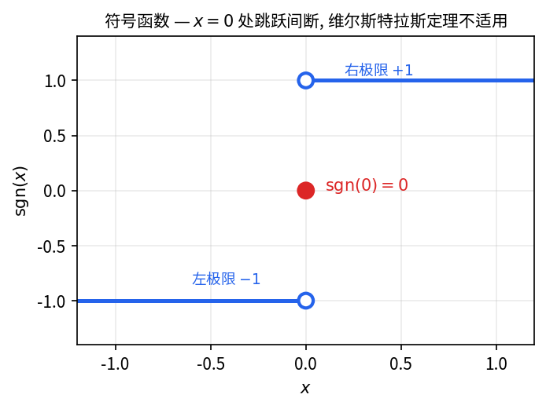
检验 \mathrm{sgn}(x) 在 x=0 处的左右极限是否相等。
\mathrm{sgn}(x) 在 x=0 处不连续：
\lim_{x \to 0^-} \mathrm{sgn}(x) = -1, \qquad \lim_{x \to 0^+} \mathrm{sgn}(x) = 1.
左右极限不相等，故极限不存在，x=0 是跳跃间断点（第一类间断点）。
由于 \mathrm{sgn}(x) 在 [-1,1] 上不连续，维尔斯特拉斯极值定理的条件不满足，定理不适用。
注意：尽管如此，\mathrm{sgn}(x) 在 [-1,1] 上实际上是有界的（值域为 \{-1, 0, 1\}），且最大值和最小值均存在，这说明定理的条件是充分条件而非必要条件。
设闭区间 [a, b] 上的连续函数 f(x) 在端点的值分别为 f(a) < 0, f(b) > 0, 则一定存在 x_0 \in [a, b] 使得 f(x_0) = 0.
证明方程 x^3 - 4x^2 + 1 = 0 在区间 (0, 1) 内至少有一个根。
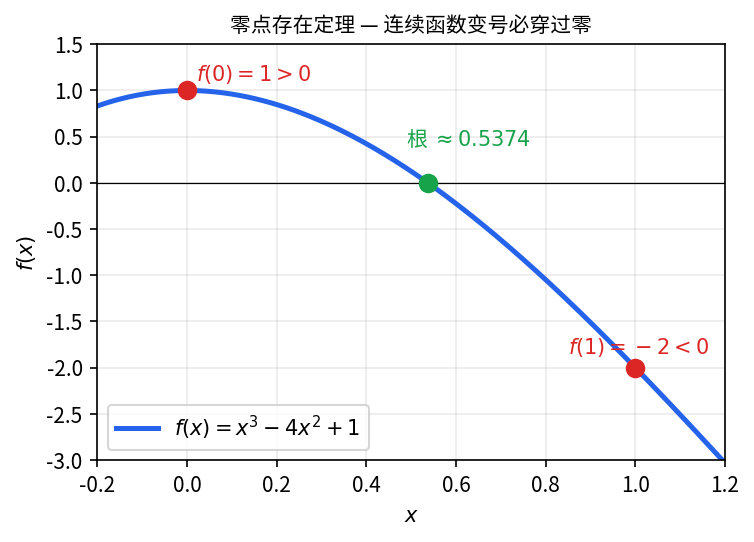
构造函数 f(x) = x^3 - 4x^2 + 1，计算其在区间端点的值，利用介值定理（布尔查诺定理）得出结论。
令 f(x) = x^3 - 4x^2 + 1。
f(x) 是多项式，在闭区间 [0, 1] 上连续。
计算端点处的值：
f(0) = 0 - 0 + 1 = 1 > 0,
f(1) = 1 - 4 + 1 = -2 < 0.
由于 f(0) > 0，f(1) < 0，f 在 [0,1] 上连续，根据介值定理（布尔查诺定理），在区间 (0, 1) 内存在 c 使得 f(c) = 0。
此即方程 x^3 - 4x^2 + 1 = 0 在区间 (0, 1) 内的一个根。
布尔查诺定理是一个存在性定理, 它只告诉我们一个东西有还是没有, 与之相对的是所谓的构造性定理, 后者会给出找出这个东西的具体办法. 存在性定理和构造性定理都是数学的重要组成部分, 按照一般的理解, 前者在纯数学中的地位更高, 后者则一般更受工程师和程序员的青睐.
为了让大家体会存在性定理的奇妙之处, 下面我们用布尔查诺定理来证明一个看起来并不明显的命题(摘自库朗所著的《什么是数学》一书). 命题如下: 如果 A 和 B 是平面内的任意两个区域, 那么在平面内一定存在一条直线, 该直线同时平分 A 和 B. (注：所谓一个”区域”, 是指平面内一条简单闭曲线所包围的部分.)
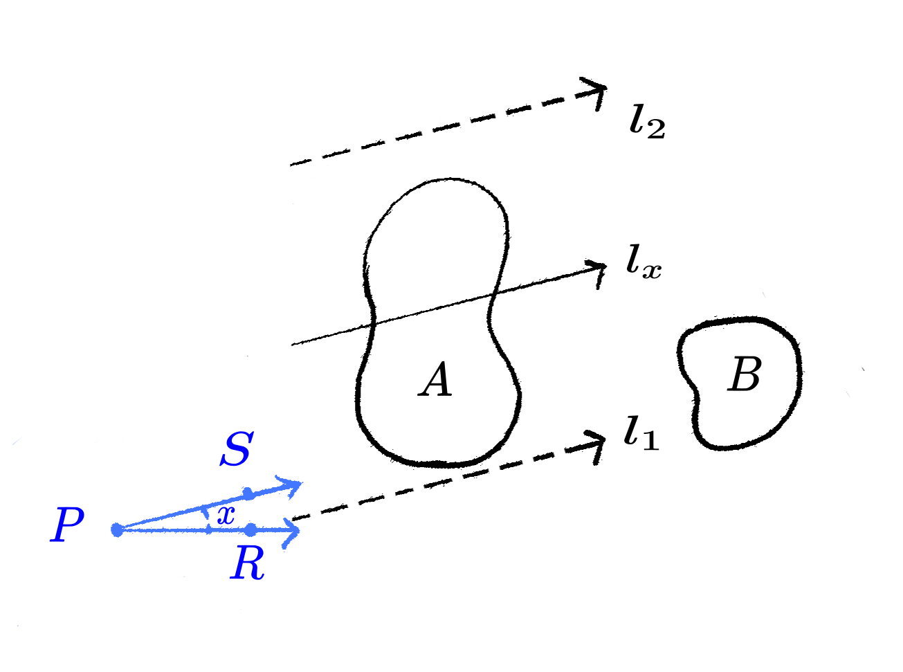
证明：
先在平面上选择某一固定点 P, 并且从 P 引出一条射线 PR 当作度量角度的始边. 如果作与 PR 的夹角为 x 的任一射线 PS, 那么在平面上会有一条与 PS 同方向且 平分区域 A 的有向直线.
因为, 如果我们作一条与 PS 同方向的有向直线 l_1, 但它整个在 A 的一侧, 然后平行地移动这条直线, 直到直线处在位置 l_2, 那么由区域 A 在直线右侧（如果直线指北, 则东向是右侧）的面积减去 A 在直线左侧的面积所定义的函数, 其值对 l_1 是负的, 对 l_2 是正的. 因为这个函数是连续的, 由布尔查诺定理, 必有某个中间位置 l_x, 使它为零, 也就是 l_x 平分了 A. 因此, 对于 x 由 x = 0^\circ 到 x = 360^\circ 的每个值 x, 平分 A 的直线 l_x 都是唯一确定的.
现在把函数 y = f(x) 定义为 B 在直线 l_x 右侧面积减去 B 在 l_x 左侧的面积. 假设直线 l_0 与 PR 同方向且平分了 A, 并且 B 在 l_0 右侧的面积大于左侧, 则对 x = 0^\circ, y 是正的. 如果 x 增加到 180^\circ, 那么直线 l_{180} 和 RP 平行, 它虽然和 l_0 一样地分割 A, 但与 l_0 方向相反, 右和左互换, 因此 y 在 x = 180^\circ 时和在 x = 0^\circ 时的数值相同, 但符号相反, 所以是负的. 当 l_x 旋转时, y 是 x 的连续函数, 那么在 0^\circ 和 180^\circ 之间, 存在 x 的某个值 \alpha, 使 y 等于零.
因此方向线 l_\alpha 同时平分 A 和 B, 证明完毕.
实际问题中人们经常会考虑某个函数的极值, 函数的切线方向是分析函数极值的有力工具: - 切线斜率为正时函数单调递增 - 切线斜率为负时函数单调递减 - 切线斜率为零时函数取到极值
那么怎么求函数在某处切线的斜率呢? 这个问题困扰了数学家好多年, 直到后来有人发现切线斜率可以看作是一个极限, 这个极限就叫做导数.
导数是一种通过极限定义的运算, 由此可见极限的重要性, 在后面的章节中, 我们还将从极限出发引出积分的概念. 本课程各部分内容之间的关系如图.
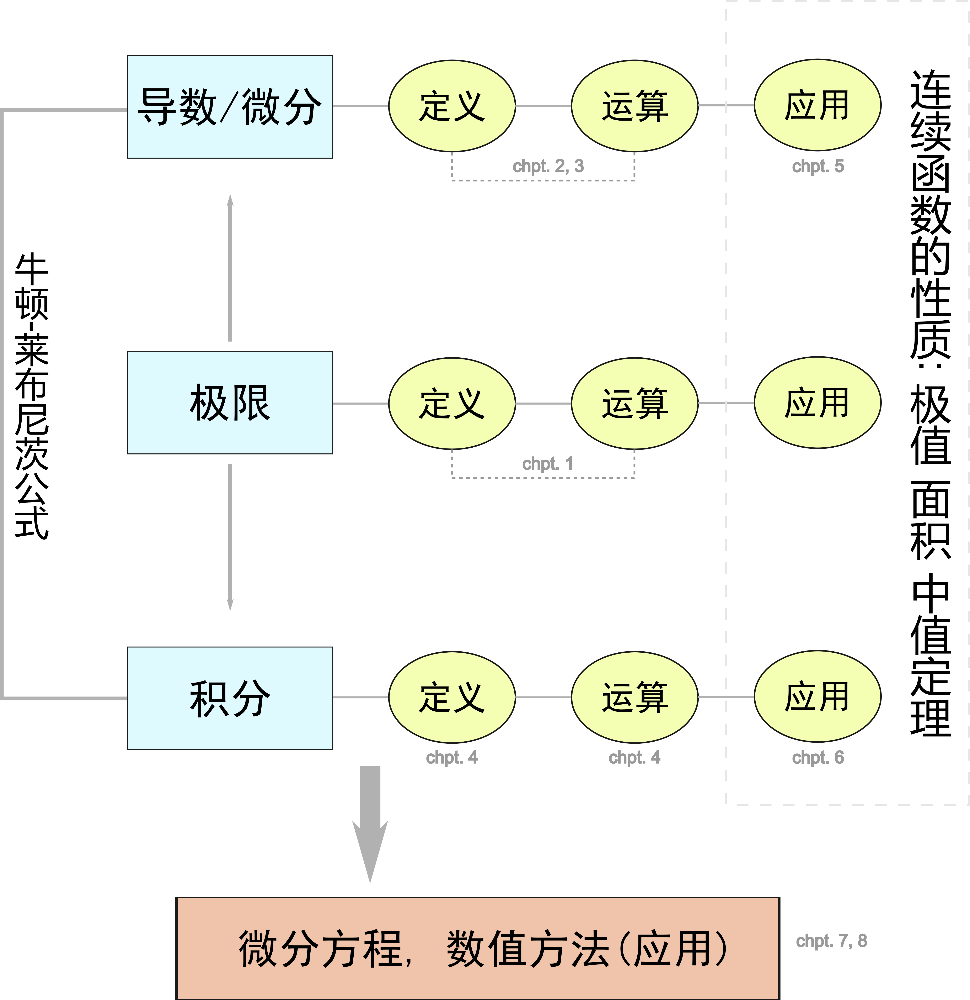
第二节 · 导数和导函数
导数是函数某处的切线斜率, 是研究函数性质的重要工具.
问题: 求使得函数 \displaystyle f(x) = \sin(x) - \frac{2x}{\pi} 最大的 x \ (0 \le x \le \pi) 的值.
求解: f(x) 的图像如图, 问题要求我们找到图像的最高点, 从图像上看函数的最高点处的切线是水平的(即斜率为0), 为了计算斜率我们可以对函数求导, 得到: f'(x) = \cos(x) - \frac{2}{\pi}. 再令 f'(x) = 0, 解得切线水平的地方位于: x^* = \arccos\left(\frac{2}{\pi}\right), 即使得函数 \displaystyle f(x) 最大的 x.
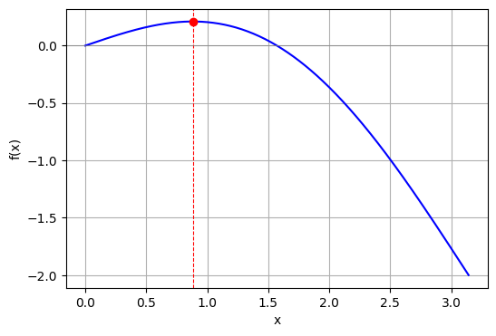
2.2.1 导数的定义
==导数的定义==
导数是切线的斜率, 而切线的斜率可以定义为割线的斜率在两点间距趋于 0 时的极限.
设函数 f(x) 在点 x_0 附近有定义, 则过点 (x_0, f(x_0)) 和 (x_0 + \Delta x, f(x_0 + \Delta x)) 的割线斜率为 \frac{f(x_0 + \Delta x) - f(x_0)}{\Delta x}
当 \Delta x \to 0 时, 这个割线斜率的极限 (若存在) 就是切线的斜率, 也即导数: f'(x_0) = \lim_{\Delta x \to 0} \frac{f(x_0 + \Delta x) - f(x_0)}{\Delta x} =\lim_{\Delta x \to 0} \frac{\Delta y}{\Delta x}
这样, 切线的斜率和导数都通过极限的方式被严格定义.
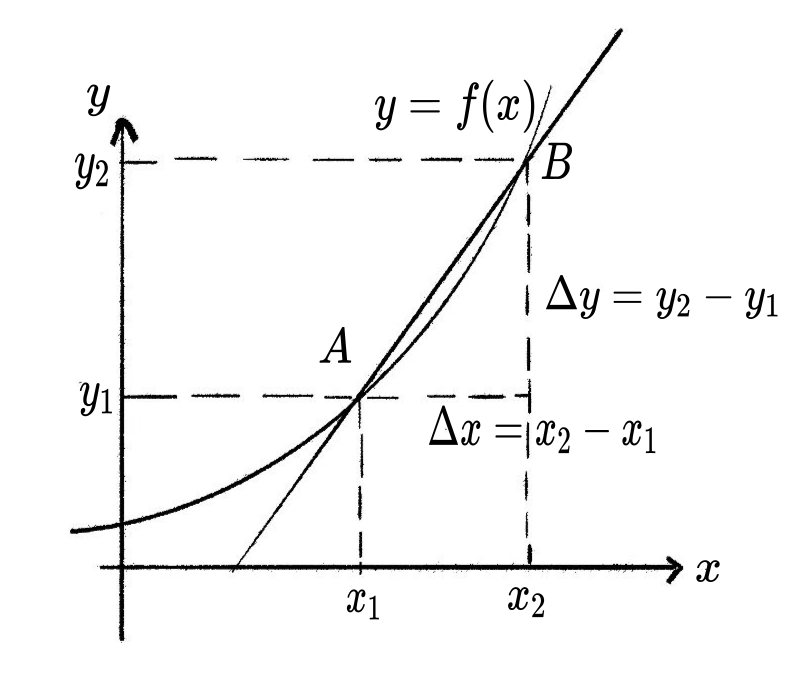
早期, 古希腊数学家如欧几里得和阿波罗尼斯主要用几何方法描述切线, 把切线看作“只与曲线在一点相交且不过该点的直线”. 但这种定义对复杂曲线 (如圆外的曲线) 不适用.
直到17世纪, 笛卡尔和费马等人提出了代数方法, 尝试用斜率和代数方程描述切线. 牛顿和莱布尼茨发明微积分后, 才用“割线的极限”来严格定义切线斜率, 也就是现代导数的定义.
所以, 现代切线的定义必须依靠极限, 因为只有极限才能精确描述“割线趋近于切线”的过程, 从而适用于所有光滑曲线. 没有极限, 切线的定义就不够一般和严密.
求常数函数 f(x) = c 在 x_0 = 1 处的导数。
直接代入导数定义，注意常数函数的函数值不变。
根据导数的定义：
\begin{align*} f'(1) &= \lim_{\Delta x \to 0} \frac{f(1 + \Delta x) - f(1)}{\Delta x} \\ &= \lim_{\Delta x \to 0} \frac{C - C}{\Delta x} = 0. \end{align*}
求函数 f(x) = x^2 在 x_0 = 2 处的导数。
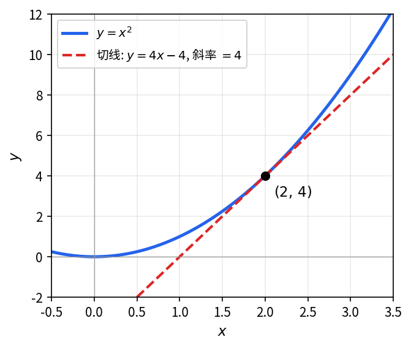
代入导数定义，展开 (2 + \Delta x)^2 后化简，令 \Delta x \to 0。
根据导数的定义：
\begin{align*} f'(2) &= \lim_{\Delta x \to 0} \frac{(2 + \Delta x)^2 - 2^2}{\Delta x} \\ &= \lim_{\Delta x \to 0} \frac{4 + 4\Delta x + (\Delta x)^2 - 4}{\Delta x} \\ &= \lim_{\Delta x \to 0} (4 + \Delta x) = 4. \end{align*}
2.2.2 导函数
对函数 f(x) 定义域上的每一点都求导 (假设每一点的导数都存在), 得到一个新的函数, 称为导函数, 记作 f'(x). 导函数是由 f(x) 衍生出来的, 正好和 Derivative (导数) 的意思一致.
数学中的“导数” (Derivative) 是由原函数“衍生”出来的新函数, 反映原函数的变化率.
金融中的“衍生品” (Derivative) 是指价值依赖于其他基础资产 (如股票, 债券等) 的金融工具. 期权 (Option) 是一种金融衍生品, 允许持有者以指定价格来购买股票. - 如果股票价格上涨 (函数递增), 看涨期权的价值增加 (导数为正). - 如果股票价格下跌 (函数递减), 看涨期权的价值减少 (导数为负).
类比: - 数学导数: f'(x) 依赖于 f(x), 描述 f(x) 的变化率, 是由 f(x) “衍生”出来的. - 金融期权: 期权的价格依赖于股票价格, 是由股票“衍生”出来的金融产品.
求函数 f(x) = x^2 的导函数。
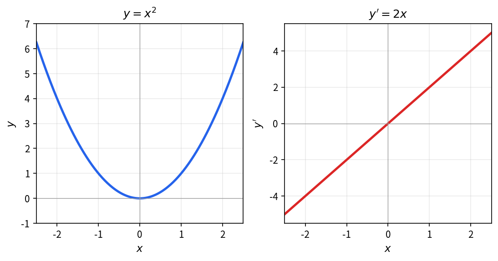
代入导数定义，对一般的 x 展开并化简，令 \Delta x \to 0。
\begin{align*} f'(x) &= \lim_{\Delta x\to 0} \frac{(x+\Delta x)^2 - x^2}{\Delta x}\\ &= \lim_{\Delta x\to 0} \frac{2x\Delta x + \Delta x^2}{\Delta x} \\ &= \lim_{\Delta x\to 0} (2x + \Delta x) = 2x. \end{align*}
求函数 f(x) = \cos x 的导数。
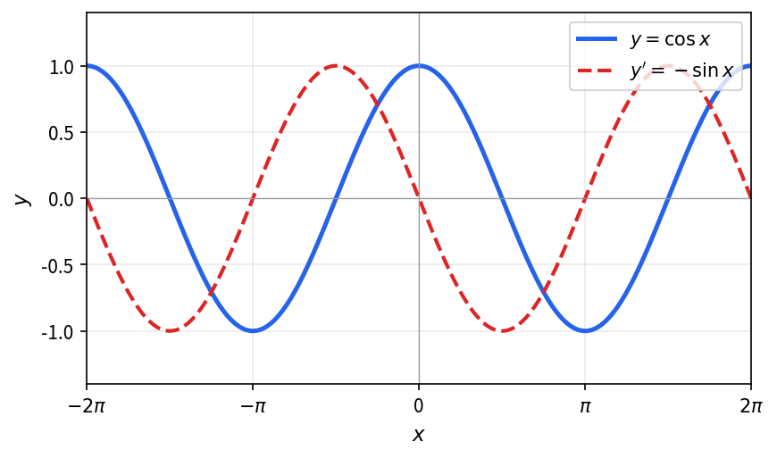
代入导数定义，用和差化积公式将 \cos(x+\Delta x) - \cos x 变形，再利用 \displaystyle\lim_{\theta\to 0}\frac{\sin\theta}{\theta}=1。
\begin{align*} f'(x) &= \lim_{\Delta x \to 0} \frac{\cos(x + \Delta x) - \cos x}{\Delta x} \\ &= \lim_{\Delta x \to 0} \frac{-2 \sin\left( x + \frac{\Delta x}{2} \right) \sin\left( \frac{\Delta x}{2} \right)}{\Delta x} \\ &= - \lim_{\Delta x \to 0} \sin\left( x + \frac{\Delta x}{2} \right) \cdot \lim_{\Delta x \to 0} \frac{\sin \frac{\Delta x}{2}}{\frac{\Delta x}{2}} \\ &= -\sin x. \end{align*}
2.2.3 幂函数, 对数函数和指数函数的导数
求正整数次幂函数 f(x) = x^m 的导数（m 为正整数）。
分 m=1 和 m>1 两种情况，后者利用二项式定理展开 (x+\Delta x)^m，提取 \Delta x 后令其趋于零。
当 m = 1 时：
f'(x) = \lim_{\Delta x \to 0} \frac{(x+\Delta x) - x}{\Delta x} = \lim_{\Delta x \to 0} \frac{\Delta x}{\Delta x} = 1.
当 m > 1 时，利用二项式定理：
\begin{align*} f'(x) &= \lim_{\Delta x \to 0} \frac{(x+\Delta x)^m - x^m}{\Delta x} \\ &= \lim_{\Delta x \to 0} \left[ \frac{x^m + m x^{m-1} \Delta x + \frac{m(m-1)}{2} x^{m-2} (\Delta x)^2 + \cdots + (\Delta x)^m - x^m}{\Delta x} \right]\\ &= \lim_{\Delta x \to 0} \left[ m x^{m-1} + \frac{m(m-1)}{2} x^{m-2} \Delta x + \cdots + (\Delta x)^{m-1} \right] \\ &= m x^{m-1}. \end{align*}
考虑到 x^0 = 1，两种情况统一为：
(x^m)' = m x^{m-1}, \quad m = 1, 2, \cdots
我们不加证明的指出, 上述公式对任意的 m \in \mathbb{R} 都成立, 即 \boxed{ (x^m)' = m x^{m-1}, \ m \in \mathbb{R}. }
在计算指数函数和对数函数的导数时我们需要用到下面的结论. 我们可以把他们当作求极限的练习题.
先导结论1: \displaystyle \lim_{x \to 0} \frac{\ln(1+ x)}{x} = 1
证明: 利用重要极限的结论, \begin{align*} \lim_{x \to 0} \frac{\ln(1 + x)}{x} &= \lim_{x \to 0} \ln (1+x)^{\frac{1}{x}} \\ &=\ln e = 1 \end{align*}
先导结论2: \displaystyle \lim_{x \to 0} \frac{\log_a(1+ x)}{x} = \frac{1}{\ln a}
证明: 利用对数换底公式, \begin{align*} \lim_{x \to 0} \frac{\log_a (1+x)}{x} &= \lim_{x \to 0} \frac{\frac{\ln(1+x)}{\ln a}}{x} \\ &= \frac{1}{\ln a} \lim_{x \to 0} \frac{\ln(1+x)}{x} \\ &= \frac{1}{\ln a} \end{align*}
==对数函数的导数==
求对数函数 f(x) = \log_u x 的导数, 其中 u 是大于 0 且不等于 1 的常数.
解: f'(x) = \lim_{\Delta x \to 0} \frac{\log_u (x + \Delta x) - \log_u x}{\Delta x}
利用换底公式 \displaystyle \log_u a = \frac{\ln a}{\ln u},
\begin{align*} f'(x) &= \lim_{\Delta x \to 0} \frac{\frac{\ln(x + \Delta x)}{\ln u} - \frac{\ln x}{\ln u}}{\Delta x} \\ &= \frac{1}{\ln u} \cdot \lim_{\Delta x \to 0} \frac{\ln(x + \Delta x) - \ln x}{\Delta x} \\ &= \frac{1}{\ln u} \cdot \lim_{\Delta x \to 0} \frac{\ln\left(1 + \frac{\Delta x}{x}\right)}{\Delta x} \\ &= \frac{1}{x \ln u} \cdot \lim_{\Delta x \to 0} \frac{\ln\left(1 + \frac{\Delta x}{x}\right)}{\frac{\Delta x}{x}} \end{align*}
令 \displaystyle h = \frac{\Delta x}{x}, 当 \Delta x \to 0 时 h \to 0, 则: f'(x) = \frac{1}{x \ln u} \cdot \lim_{h \to 0} \frac{\ln(1 + h)}{h} = \frac{1}{x \ln u}
注: 最后一步用到了上面的先导结论.
由此我们得到对数函数的导数为:
\boxed{(\log_u x)' = \frac{1}{x \ln u}}
特别的, 当 u=e 时, \log_u x = \ln x, 此时 \boxed{(\ln x)' = \frac{1}{x}}
==指数函数的导数==
求指数函数 f(x) = q^x 的导数, 其中底数 q 是大于 0 且不等于 1 的常数.
解:
\begin{align*} f'(x) &= \lim_{\Delta x \to 0} \frac{q^{x + \Delta x} - q^x}{\Delta x} \\ &= \lim_{\Delta x \to 0} \frac{q^x \cdot q^{\Delta x} - q^x}{\Delta x} \\ &= q^x \cdot \lim_{\Delta x \to 0} \frac{q^{\Delta x} - 1}{\Delta x} \end{align*}
我们注意到当 \displaystyle \Delta x\to 0 时, \displaystyle q^{\Delta x} \to 1
而 \displaystyle q^{\Delta x} -1 \to 0, 于是我们把 \displaystyle q^{\Delta x} -1 看作一个新的变量 h, 故此时有当 \displaystyle \Delta x\to 0 时 h \to 0.
于是根据极限运算的换元法 \lim_{\Delta x \to 0} \frac{q^{\Delta x} - 1}{\Delta x} = \lim_{h \to 0} \frac{h}{\log_q(1+h)} = \ln q
上式中的最后一个等式用到了前面的先导结论.
因此, \boxed{(q^x)' = q^x \ln q}
这就是指数函数的导数公式.
特别的, 当 q = e 时, 有 \boxed{(e^x)' = e^x}
也就是说, 以欧拉数 e 为底数的指数函数的导数正是它自己, 由此也可以看出 e 在数学上的特殊性.
2.2.4 可导函数与连续函数
处处可导的函数称为可导函数, 处处连续的函数称为连续函数. 函数在一点可导则在该点也必连续, 但函数在一点连续并不保证在该点可导.
==连续但不可导的反例1==
绝对值函数 f(x) = |x| 在 0 点连续但不可导.
绝对值函数在 x = 0 处是连续的. 在 x=0 处, \lim_{\Delta x \to 0} \frac{f(0+\Delta x)-f(0)}{\Delta x} = \lim_{\Delta x \to 0} \frac{|\Delta x|}{\Delta x}
当 \Delta x < 0 时, \displaystyle \frac{|\Delta x|}{\Delta x} = -1;
当 \Delta x > 0 时, \displaystyle \frac{|\Delta x|}{\Delta x} = 1,
左右极限不相等, 故极限不存在, 因此, 函数 f(x) = |x| 在 x=0 处不可导.
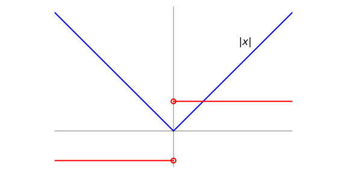
==连续但不可导的反例2==
函数 \displaystyle f(x) = x^{\frac{1}{3}} 在 0 点处连续但不可导.
函数在 x = 0 处连续. 下面我们来计算该函数在 x=0 处的导数.
- 方法一: 根据定义计算
\frac{f(0+\Delta x)-f(0)}{\Delta x} = \frac{(0+\Delta x)^{\frac{1}{3}} - 0^{\frac{1}{3}}}{\Delta x} = (\Delta x)^{-\frac{2}{3}}.
当 \Delta x \to 0 时, 极限趋于无穷大, 故函数在 x = 0 处不可导.
- 方法二: 对导函数取极限
根据幂函数的求导公式可以得到
f'(x) = \frac{1}{3}x^{-\frac{2}{3}}, \ x\ne 0.
当 x \to 0 时, 导函数 f'(x) 趋于无穷大, 提示 f'(0) 可能不存在. 需要特别指出, 上述对导数取极限的做法主要提供一个感性认识(直觉), 要严格证明导数在 0 点不存在还是需要根据定义计算.
注意:
上述两种方法都涉及到极限, 但是取极限的对象不同, 方法一中是对 \Delta x 取极限, 而方法二中是对 x 取极限, 尽管都趋于无穷大(而且指数项都是 -\frac{2}{3}), 但两者的意义是不一样的, 请注意体会.
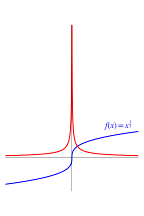
2.2.5 单侧导数
在计算绝对值函数在 0 点的导数时, 我们注意到 f(x) = |x| 在 0 点左右两侧的切线斜率都存在, 为了更加细致的分析函数的行为, 我们可以引入单侧导数的概念.
我们定义函数 f(x) 在 x_0 处的左导数 f'_-(x_0) = \lim_{\Delta x \to 0^-} \frac{f(x_0 + \Delta x ) - f(x_0)}{\Delta x },
和右导数 f'_+(x_0) = \lim_{\Delta x \to 0^+} \frac{f(x_0 + \Delta x ) - f(x_0)}{\Delta x }.
左导数和右导数统称为单侧导数, 函数 $ f(x) $ 在点 $ x_0 $ 处可导的条件是左导数和右导数都存在且相等.
对绝对值函数在 x_0 = 0 点处而言, 其单侧导数都存在, 但是不相等, 因此在该点并不可导.
第三节 · 导数的计算
求给定函数的导数的操作称为求导运算. 本节将介绍常见函数的求导公式与导数的四则运算法则. 熟练运用这些法则, 将能显著简化求导过程, 提高运算效率.
2.3.1 初等函数求导公式
- 幂函数
- 如果 f(x) = x^n, 则: \displaystyle f'(x) = n \cdot x^{n-1}
- 指数函数
如果 f(x) = e^x, 则: \displaystyle f'(x) = e^x
如果 f(x) = a^x, 则: \displaystyle f'(x) = a^x \ln(a)
- 对数函数
如果 f(x) = \ln(x), 则: \displaystyle f'(x) = \frac{1}{x}
如果 f(x) = \log_a(x), 则: \displaystyle f'(x) = \frac{1}{x \ln(a)}
- 三角函数
如果 f(x) = \sin(x), 则: \displaystyle f'(x) = \cos(x)
如果 f(x) = \cos(x), 则: \displaystyle f'(x) = -\sin(x)
- 反三角函数 (不要求)
如果 f(x) = \arcsin(x), 则: \displaystyle f'(x) = \frac{1}{\sqrt{1 - x^2}}
如果 f(x) = \arccos(x), 则: \displaystyle f'(x) = \frac{-1}{\sqrt{1 - x^2}}
如果 f(x) = \arctan(x), 则: \displaystyle f'(x) = \frac{1}{1 + x^2}
2.3.2 导数的四则运算
下面的导数四则法则都可以根据导数的定义加以证明.
- 加法: 若函数 f(x) 和 g(x) 在点 x 处可导, 则:
\boxed{ [f(x) + g(x)]' = f'(x) + g'(x) }
证明: 根据导数的定义: \begin{align*} [f(x) + g(x)]' &= \lim_{h \to 0} \frac{[f(x+h) + g(x+h)] - [f(x) + g(x)]}{h} \\ & = \lim_{h \to 0} \left[ \frac{f(x+h) - f(x)}{h} + \frac{g(x+h) - g(x)}{h} \right] \\ & = \lim_{h \to 0} \frac{f(x+h) - f(x)}{h} + \lim_{h \to 0} \frac{g(x+h) - g(x)}{h} \\ & = f'(x) + g'(x) \end{align*}
- 减法: 若函数 f(x) 和 g(x) 在点 x 处可导, 则:
\boxed{ [f(x) - g(x)]' = f'(x) - g'(x) }
该性质的证明跟导数的加法运算完全类似.
- 乘法: 若函数 f(x) 和 g(x) 在点 x 处可导, 则: \boxed{ [f(x) \cdot g(x)]' = f'(x)g(x) + f(x)g'(x) }
证明: 根据导数的定义: \begin{align*} [f(x)g(x)]' &= \lim_{h \to 0} \frac{f(x+h)g(x+h) - f(x)g(x)}{h} \\ &= \lim_{h \to 0} \frac{f(x+h)g(x+h) - f(x+h)g(x) + f(x+h)g(x) - f(x)g(x)}{h} \\ &= \lim_{h \to 0} \left( f(x+h) \frac{g(x+h) - g(x)}{h} + g(x) \frac{f(x+h) - f(x)}{h} \right) \\ &= \lim_{h \to 0} f(x+h) \cdot \lim_{h \to 0} \frac{g(x+h) - g(x)}{h} + g(x) \cdot \lim_{h \to 0} \frac{f(x+h) - f(x)}{h} \\ &= f(x)g'(x) + g(x)f'(x) \end{align*}
- 除法 若函数 f(x) 和 g(x) 在点 x 处可导, 且 g(x) \ne 0, 则: \boxed{ \left[ \frac{f(x)}{g(x)} \right]' = \frac{f'(x)g(x) - f(x)g'(x)}{[g(x)]^2} }
证明: \dfrac{f(x)}{g(x)} 可以看作 f(x) 与 \dfrac{1}{g(x)} 的乘积, 而 \dfrac{1}{g(x)} 可以看成是函数 \dfrac{1}{x} 与 g(x) 的复合. 于是我们可以联合复合函数求导和上面的乘法求导法则来推导上述除法求导公式. \begin{align*} \left[ \frac{f(x)}{g(x)} \right]' &= f'(x)\left[ \dfrac{1}{g(x)} \right] + f(x)\left[ \dfrac{1}{g(x)} \right]'\\ &= \dfrac{f'(x)}{g(x)} - f(x) \cdot \dfrac{g'(x)}{[g(x)]^2} \\ &= \frac{f'(x)g(x) - f(x)g'(x)}{[g(x)]^2} \end{align*}
求函数 y = 3x^3 - 4x^2 + 5x - 9 的导数。
对多项式逐项求导，利用幂函数求导公式 (x^n)' = nx^{n-1} 和常数的导数为零。
\begin{align*} y' &= (3x^3)' - (4x^2)' + (5x)' - (9)' \\ &= 3 \cdot 3x^{3-1} - 4 \cdot 2x^{2-1} + 5 \cdot 1x^{1-1} - 0\\ &= 9x^2 - 8x + 5. \end{align*}
求函数 y = 2e^{x}(\sin x + 2\cos x) 的导数。
把 2e^x 和 (\sin x + 2\cos x) 看作两个因子，应用乘积法则 (uv)' = u'v + uv'。
\begin{align*} y' &= (2e^{x})'(\sin x + 2\cos x) + 2e^{x}(\sin x + 2\cos x)' \\ &= 2e^{x}(\sin x + 2\cos x) + 2e^{x}(\cos x - 2\sin x) \\ &= 2e^{x}\sin x + 4e^{x}\cos x + 2e^{x}\cos x - 4e^{x}\sin x \\ &= 6e^{x}\cos x - 2e^{x}\sin x \\ &= 2e^{x}(3\cos x - \sin x). \end{align*}
求函数 f(x) = x^3 + 3\sin x + \dfrac{5}{2} 的导函数 f'(x) 及 f'\!\left(\dfrac{\pi}{4}\right)。
逐项求导后代入 x = \dfrac{\pi}{4}。
\begin{align*} f'(x) &= (x^3)' + (3\sin x)' + \left( \frac{5}{2} \right)' \\ &= 3x^2 + 3\cos x. \end{align*}
代入 x = \dfrac{\pi}{4}：
f'\!\left( \frac{\pi}{4} \right) = 3\left(\frac{\pi}{4}\right)^2 + 3\cos\frac{\pi}{4} = \frac{3\pi^2}{16} + \frac{3\sqrt{2}}{2}.
求函数 y = \tan x 的导数。
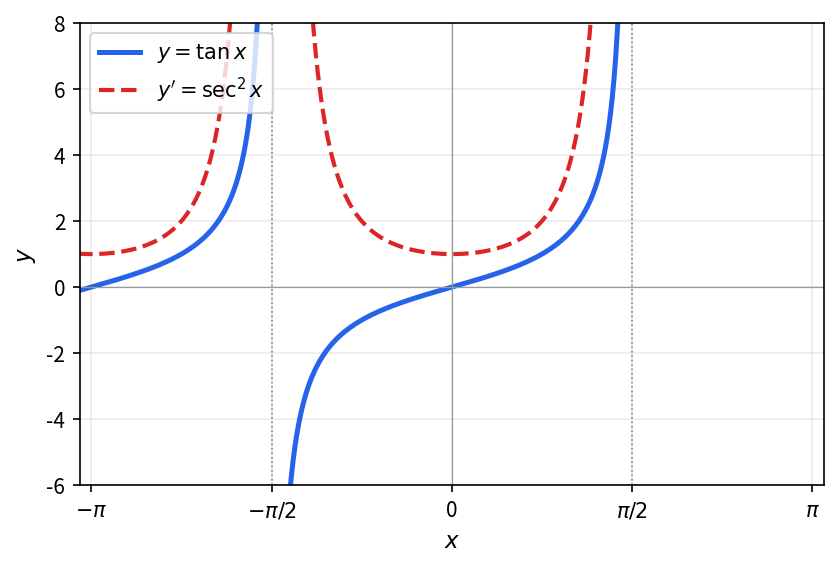
将 \tan x = \dfrac{\sin x}{\cos x} 写成商的形式，再应用商法则。
\begin{align*} y' &= \left( \frac{\sin x}{\cos x} \right)' \\ &= \frac{(\sin x)' \cos x - \sin x (\cos x)'}{\cos^2 x} \\ &= \frac{\cos^2 x + \sin^2 x}{\cos^2 x} = \frac{1}{\cos^2 x}. \end{align*}
2.3.3 高阶导数
导函数也是函数, 所以可以继续对导函数求导, 也就是二阶导数. 二阶导数反应了导函数的变化率. 依次可以继续到三阶导数, 四阶导数, …
f''(x) = (f'(x))'
高阶导数
- f'(x), f''(x), f'''(x), f^{(n)}(x), \cdots.
设 y = ax^2 + bx + c，求二阶导数 y''。
先对 y 求一阶导数，再对 y' 再次求导。
一阶导数：
y' = 2ax + b.
二阶导数：
y'' = 2a.
求幂函数 y = x^{a}（a 是任意常数）的 n 阶导数 y^{(n)}。
逐次求导，观察规律：每次求导乘以递减的因子，指数减 1；对整数次幂的情形讨论 m \le n 与 m > n 两种情况。
逐次求导：
\begin{align*} y' &= a x^{a-1},\\ y'' &= a (a - 1) x^{a-2},\\ y''' &= a (a - 1)(a - 2) x^{a-3}. \end{align*}
一般的：
y^{(n)} = a (a - 1)(a - 2) \cdots (a - n + 1) x^{a-n}.
特别地，当 a = n 为正整数时：
(x^n)^{(m)} = \begin{cases} C_n^m \, m! \, x^{n-m}, & m \le n, \\ 0, & m > n. \end{cases}
在物理中, 给定位移关于时间的函数 s(t), 物体的速度 v(t) 便是 s(t) 的导数.
我们来看两个例子.
自由落体运动
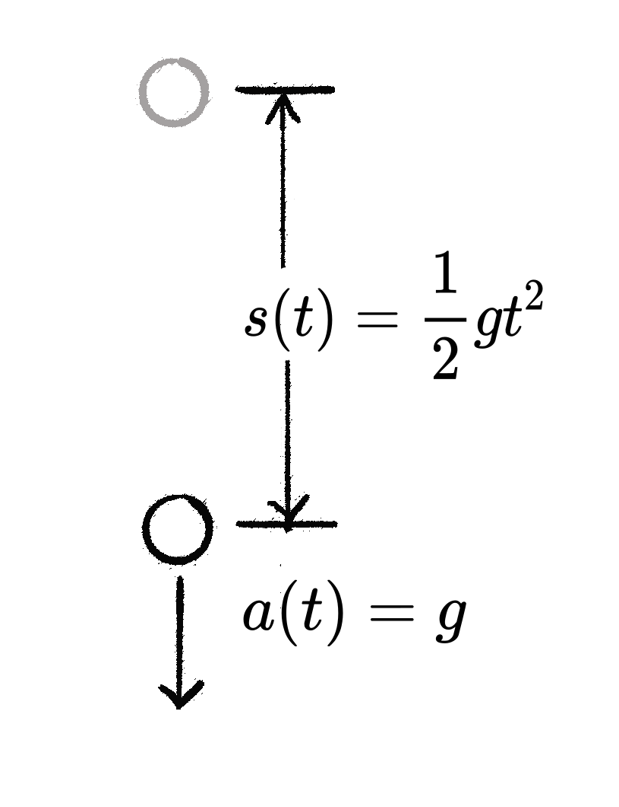
从静止开始的自由落体物体, 其位移随时间的函数为
s(t) = \frac{1}{2}gt^2.
该物体的速度对应 s(t) 的导数, 即 v(t) = s'(t) = gt.
其加速度对应 v(t) 的导数, 或 s(t) 的二阶导数, a(t) = v'(t) = s''(t) = g.
所以自由落体为加速度等于 g 的匀加速直线运动. 这与自由下落物体的牛顿第二定律 F = mg = ma 是吻合的.
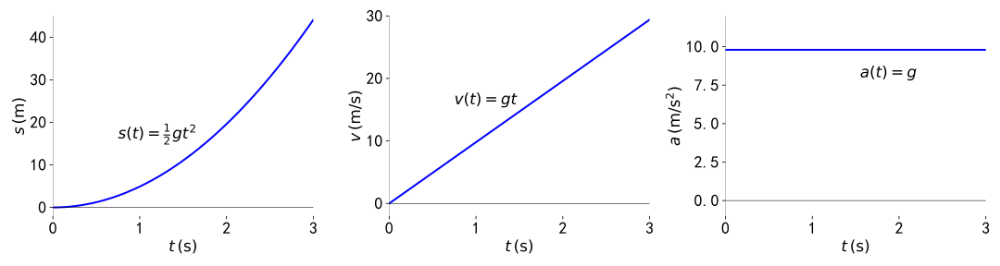
简谐振动
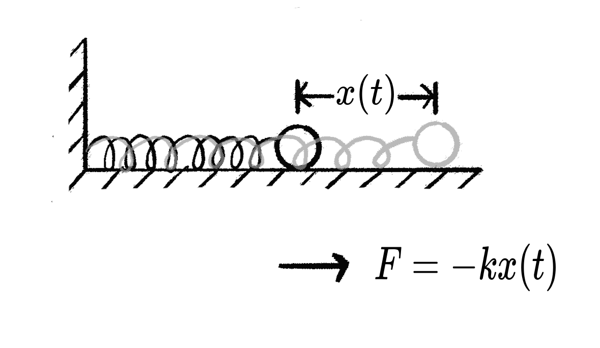
连结弹簧的小球在光滑水平面上围绕平衡位置做振荡运动, 其位移随时间的函数为
x(t) = A \sin (\omega t).
其瞬时速度为 x(t) 的导数, 即 v(t) = x'(t) = A \omega \cos(\omega t).
其加速度对应 v(t) 的导数, 或 x(t) 的二阶导数, a(t) = v'(t) = x''(t) = - A \omega^2 \sin (\omega t).
对 A = 2, \omega = \dfrac{2\pi}{3}, 小球的位移, 速度和加速度如下图.
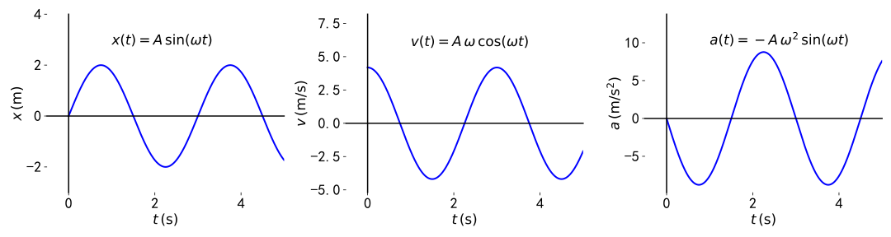
注意, 加速度和位移满足关系 a(t) = -k x(t) 其中常数 k = \omega^2. 而另一方面, 由胡克定律和牛顿第二定律, 我们可以得到小球的运动方程为 F = ma(t) = -kx(t) 可见我们刚才从运动方程中得到的加速度与位移的关系与牛顿定律的结论是吻合的(在相差一个可约化的常数 m 的意义下).
第四节 · 利用导数来研究函数的性质
导数是用来研究函数性质的直观工具.
2.4.1 单调性
- 导数>0, 单调递增;
- 导数<0, 单调递减;
- 导数=0, 无法判断.
讨论函数 y = x + \cos x 在 [0, 2\pi] 上的单调性。
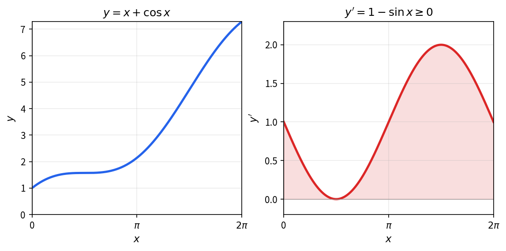
求导后判断导数在区间上的符号。
函数在 [0, 2\pi] 上连续，在 (0, 2\pi) 内可导。求导得：
y' = 1 - \sin x \ge 0.
故函数 y = x + \cos x 在 [0, 2\pi] 上单调递增。
讨论函数 y = e^x - x + 3 的单调性。
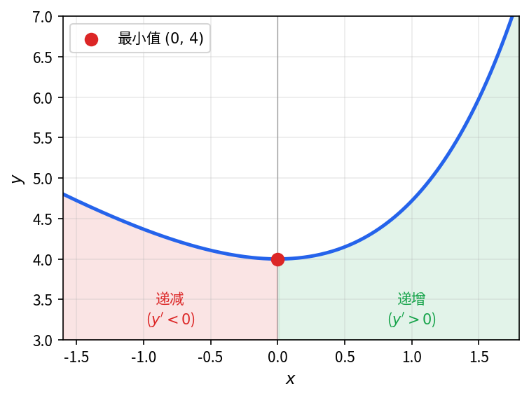
求导后，分析 y' = e^x - 1 在 x < 0 和 x \ge 0 时的正负。
对函数求导得：
y' = e^x - 1.
- 当 x < 0 时，y' < 0，故函数在 (-\infty, 0] 上单调递减；
- 当 x \ge 0 时，y' \ge 0，故函数在 [0, +\infty) 上单调递增。
2.4.2 极值
导数为 0 的点也称为驻点或临界点, 在临界点处:
- 二阶导数 >0 \Rightarrow 极小
- 二阶导数 <0 \Rightarrow 极大
- 二阶导数 =0 \Rightarrow 无法判断.
求函数 f(x) = x^4 - 4x^2 的极值。
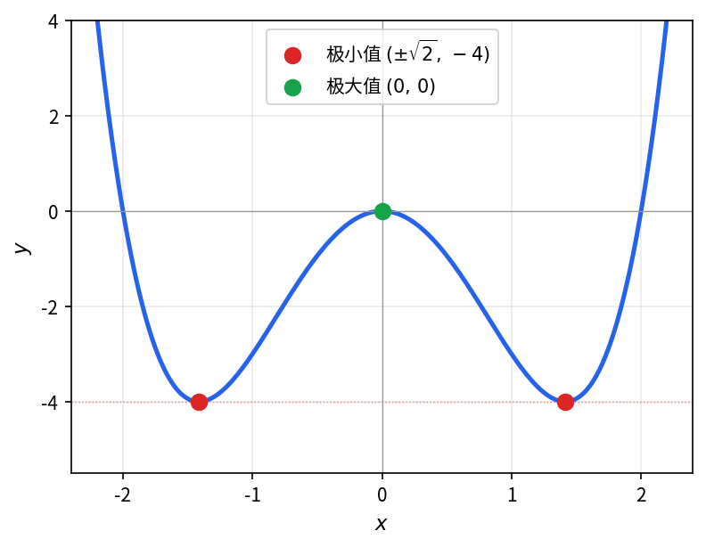
令一阶导数 f'(x) = 0 求出临界点，再用二阶导数判断各临界点处的极值类型。
令一阶导数等于零：
f'(x) = 4x^3 - 8x = 4x(x^2 - 2) = 0.
临界点为：
x_1 = 0, \quad x_2 = \sqrt{2}, \quad x_3 = -\sqrt{2}.
二阶导数为：
f''(x) = 12x^2 - 8.
计算各临界点处的二阶导数：
- x_1 = 0：f''(0) = -8 < 0，为极大值，f(0) = 0；
- x_2 = \sqrt{2}：f''(\sqrt{2}) = 16 > 0，为极小值，f(\sqrt{2}) = -4；
- x_3 = -\sqrt{2}：f''(-\sqrt{2}) = 16 > 0，为极小值，f(-\sqrt{2}) = -4。
设 f(x) 在 [a, b] 上连续, 则其最大值和最小值可按以下步骤求解:
- 确定临界点:
- 求 f(x) 在 (a, b) 内的 驻点 (即 f'(x) = 0 的解);
- 找出 f(x) 的 不可导点 (如间断点, 无穷大点等).
- 计算候选值:
- 计算驻点, 不可导点处的函数值 f(x_i);
- 计算端点值 f(a) 和 f(b).
- 比较结果: 选出最大值和最小值
假设马以均匀速度行进，现需骑马从点 A 到点 B，但必须先去河边（直线）喝一次水。已知点 A 和点 B 在河的同侧，求耗时最短的路径。
建立坐标系： - 设河边为 x 轴； - 点 A 坐标为 (0, h_1)，点 B 坐标为 (l, h_2)，其中 h_1 > 0, h_2 > 0； - 设饮水点为 P(x, 0)，其中 x \in [0, l]。
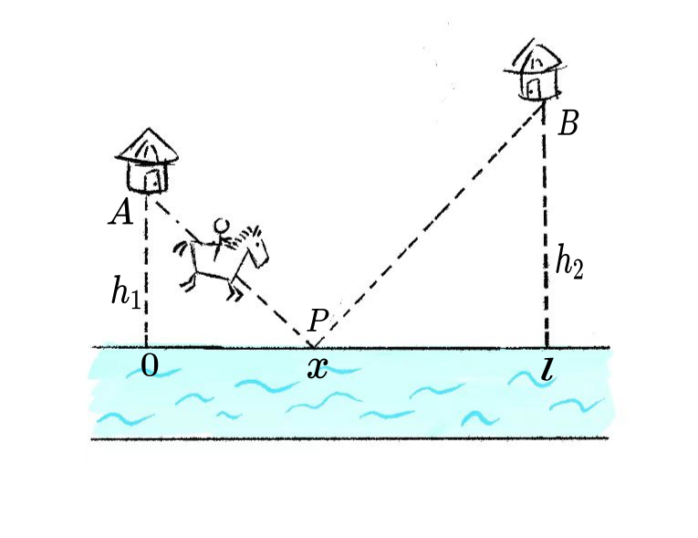
路径总长度是 x 的函数，对其求导令导数为零，找到最短路径对应的 x。
路径总长度 S(x) 为：
S(x) = \sqrt{h_1^2 + x^2} + \sqrt{h_2^2 + (l - x)^2}.
对 S(x) 求导：
S'(x) = \frac{x}{\sqrt{h_1^2 + x^2}} - \frac{l - x}{\sqrt{h_2^2 + (l - x)^2}}.
令 S'(x) = 0，得：
\frac{x}{\sqrt{h_1^2 + x^2}} = \frac{l - x}{\sqrt{h_2^2 + (l - x)^2}}.
解得：
x = \frac{l h_1}{h_1 + h_2}.
将点 B 关于 x 轴作对称点 B'，直线 AB' 与 x 轴的交点即为最短路径的饮水点，利用三角形相似得到 x。
将点 B 关于 x 轴（河边）反射到点 B'，坐标为 (l, -h_2)。
连接点 A(0, h_1) 和点 B'(l, -h_2)，与 x 轴的交点即为饮水点 P。根据三角形相似，同样可得：
x = \frac{l h_1}{h_1 + h_2}.
这个方法利用了镜面反射原理，基于直线最短得到了快速直观的解法。
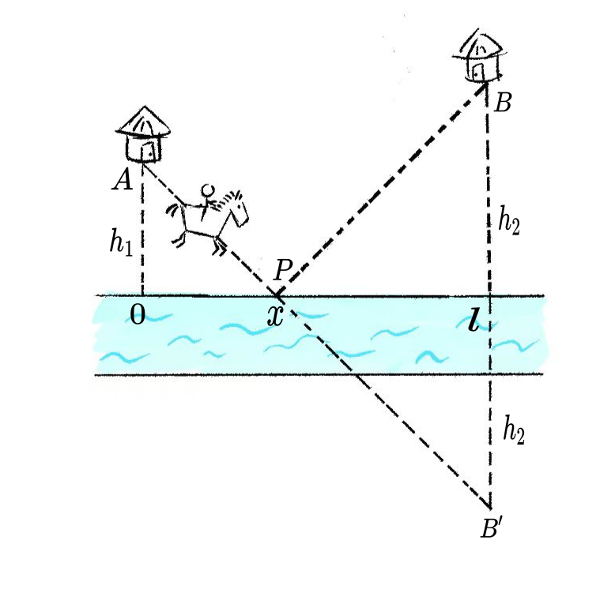
现需骑马从点 A 到点 B，但必须先去河边（直线）喝一次水。已知点 A 和点 B 在河的同侧，且马在喝水前速度为 v_1，喝水后速度为 v_2 < v_1，求耗时最短的路径。
坐标系同上：A = (0, h_1)，B = (l, h_2)，饮水点 P = (x, 0)，x \in [0, l]。
注意：对这个题目而言，镜面反射原理不适用，但微积分方法仍然适用。
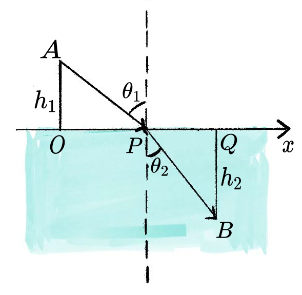
总时间 T(x) 是路程除以速度的和，对 T(x) 求导令其为零，分析令 T'(x) = 0 的几何意义。
总时间为：
T(x) = \frac{\sqrt{h_1^2 + x^2}}{v_1} + \frac{\sqrt{h_2^2 + (l - x)^2}}{v_2}.
对 T(x) 求导得：
\begin{align*} T'(x) &= \frac{1}{v_1} \cdot \frac{x}{\sqrt{h_1^2 + x^2}} - \frac{1}{v_2} \cdot \frac{l - x}{\sqrt{h_2^2 + (l - x)^2}}. \end{align*}
令 T'(x) = 0，得：
\frac{1}{v_1} \cdot \frac{x}{\sqrt{h_1^2 + x^2}} = \frac{1}{v_2} \cdot \frac{l - x}{\sqrt{h_2^2 + (l - x)^2}}.
设 \theta_1 为 AP 与竖直方向的夹角，\theta_2 为 PB 与竖直方向的夹角，则 \sin\theta_1 = \dfrac{x}{\sqrt{h_1^2+x^2}}，\sin\theta_2 = \dfrac{l-x}{\sqrt{h_2^2+(l-x)^2}}，上式即：
\frac{\sin \theta_1}{v_1} = \frac{\sin \theta_2}{v_2}.
这正是斯涅耳定律（Snell’s Law），说明耗时最短的路径满足与光的折射相同的规律。
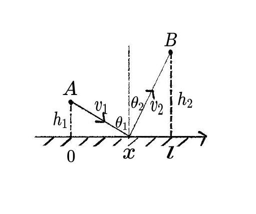
2.4.3 凸性
如果函数 f(x) 满足: 对于定义域内任意的 x_1, x_2, 都有 f\left(\frac{x_1 + x_2}{2}\right) \leq \frac{f(x_1) + f(x_2)}{2} 则称函数 f(x) 是凸函数.
更一般地, 对于任意 t \in [0,1], 都有: f(tx_1 + (1-t)x_2) \leq tf(x_1) + (1-t)f(x_2) 这称为Jensen不等式, 是凸函数的等价定义.
与凸函数相对的, 我们还有凹函数的概念. 如果在上面的定义中把不等号反向, 我们就得到了凹函数的定义. 不难发现, 讨论函数 f(x) 的凹性等价于讨论函数 -f(x) 的凸性, 所以我们有凸性的定义就够用了.
注意: 这里采用的是国际通用的凸函数定义 (“凸”对应英文的”convex”), 与某些国内教材的定义可能相反.
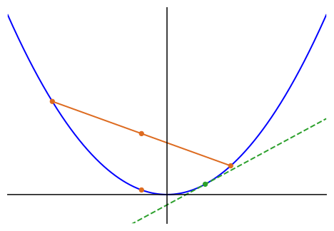
弦在图像上方: 凸函数图像上任意两点间的弦 (连接这两点的线段) 始终位于函数图像之上或与之重合.
切线在图像下方: 对于可导的凸函数, 其图像上任意一点的切线都位于函数图像之下.
局部极小即全局极小: 凸函数的任何局部极小值点都是全局极小值点, 这一性质在优化问题中极为重要.
对于二阶可导的函数 f(x):
- 若在区间 I 上 f''(x) \geq 0, 则 f(x) 在 I 上是凸函数
- 若在区间 I 上 f''(x) \leq 0, 则 f(x) 在 I 上是凹函数
- 若在区间 I 上 f''(x) > 0, 则 f(x) 在 I 上是严格凸函数
- 若在区间 I 上 f''(x) < 0, 则 f(x) 在 I 上是严格凹函数
- 凸函数的局部极小值就是全局极小值.
- 严格凸函数若有极小值, 则极小值点唯一.
凸函数的良好性质使其在优化理论中占据核心地位: - 全局最优性: 凸优化问题的任何局部最优解都是全局最优解. - 高效算法: 存在多种高效算法 (如梯度下降法, 内点法等) 求解凸优化问题.
判断函数 y = \sqrt{x}（x \ge 0）的凹凸性。
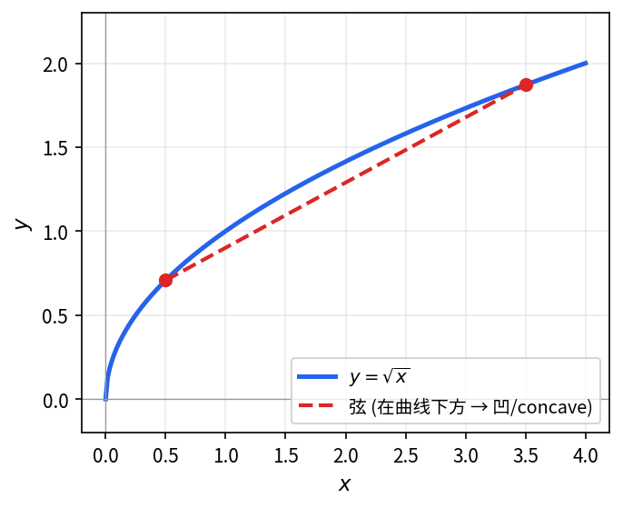
计算二阶导数，根据其符号判断函数的凹凸性。
函数的一阶导数和二阶导数分别为：
\begin{align*} y' &= \frac{1}{2\sqrt{x}}, \\ y'' &= -\frac{1}{4x^{3/2}}. \end{align*}
在函数定义域 (0, +\infty) 内 y'' < 0，故 y = \sqrt{x} 为凹函数。
判断函数 y = x^2 的凹凸性。
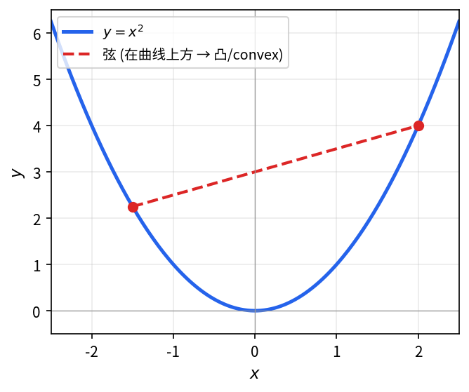
计算二阶导数，根据其符号判断凹凸性。
计算二阶导数：y'' = 2 > 0，故 y = x^2 为凸函数。
判断函数 y = \ln x（x > 0）的凹凸性。
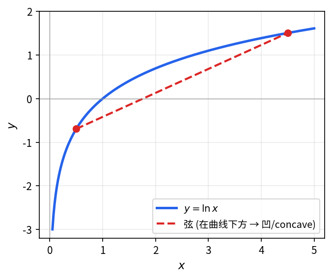
计算二阶导数，根据其符号判断凹凸性。
计算二阶导数：y'' = -\dfrac{1}{x^2} < 0，故 y = \ln x 为凹函数。
- 凸函数的非负加权和仍是凸函数
定理: 若 f_1(x), f_2(x), \ldots, f_n(x) 都是凸函数, 且 \alpha_1, \alpha_2, \ldots, \alpha_n \geq 0, 则函数
g(x) = \alpha_1 f_1(x) + \alpha_2 f_2(x) + \cdots + \alpha_n f_n(x)
也是凸函数.
几何解释: 见下面的例子.
- 凸函数的逐点最大值仍是凸函数
定理: 若 f_1(x), f_2(x), \ldots, f_n(x) 都是凸函数, 则函数 h(x) = \max\{f_1(x), f_2(x), \ldots, f_n(x)\} 也是凸函数.
几何解释: 见下面的例子.
- 凸函数的仿射变换仍是凸函数
定理: 若 f(x) 是凸函数, 则对于任意 a \neq 0 和任意 b, 函数 k(x) = f(ax + b) 也是凸函数.
几何解释: 仿射变换 ax + b 对应于坐标轴的缩放和平移, 这些操作不会改变函数的凸性.
考虑两个凸函数: - f_1(x) = x^2 (凸函数, 因为 f_1''(x) = 2 > 0) - f_2(x) = e^x (凸函数, 因为 f_2''(x) = e^x > 0)
取非负权重 \alpha_1 = 2, \alpha_2 = 1, 则 g(x) = 2x^2 + e^x 也是凸函数, 因为 g''(x) = 4 + e^x > 0
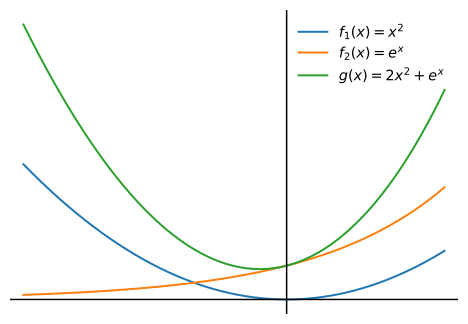
考虑两个凸函数: f_1(x) = x^2, f_2(x) = (x-1)^2 + 1 则它们的逐点最大值 h(x) = \max\{x^2, (x-1)^2 + 1\} 也是凸函数.
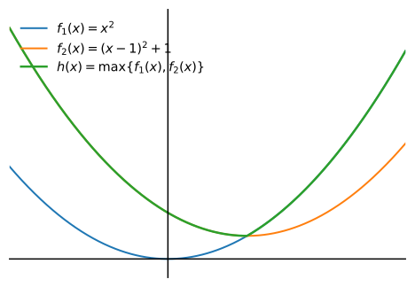
考虑凸函数 f(x) = x^2，取 a = 2, b = 1，验证 k(x) = f(2x + 1) 也是凸函数。
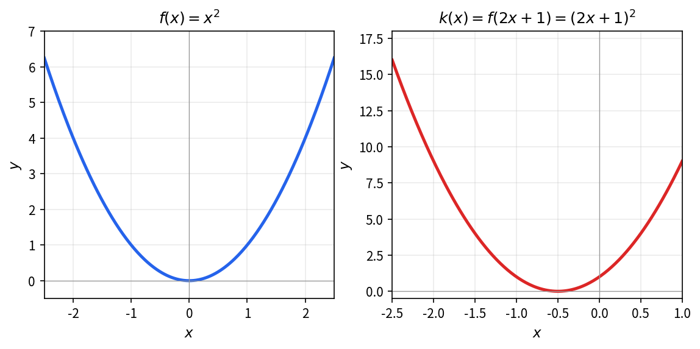
利用二阶导数判别凸函数。
取 a = 2, b = 1，则 k(x) = f(2x + 1) = (2x + 1)^2 = 4x^2 + 4x + 1 也是凸函数，因为 k''(x) = 8 > 0
支持向量机(SVM)是机器学习中的重要算法. SVM的优化问题利用了保凸运算的性质, 其待优化的目标函数可以表示为: \min_{w,b} \frac{1}{2}\|w\|^2 + C\sum_{i=1}^n \max(0, 1-y_i(w^T x_i + b))
其中向量 w 和标量 b 是待优化的自变量. 这里: - \frac{1}{2}\|w\|^2 是凸函数 (二次函数的叠加) - \max(0, 1-y_i(w^T x_i + b)) 是凸函数 (凸函数的逐点最大值) - 它们的非负加权和 (C > 0) 仍然是凸函数
因此, SVM的优化问题是凸优化问题, 保证了全局最优解的存在性和高效求解的可能性.
与支持向量机(SVM)等凸优化问题不同, 神经网络的损失函数通常是高度非凸的. 神经网络的非凸性不是缺陷, 而是其特征的一部分. 理解这一性质不仅帮助我们设计更好的优化算法, 也促使我们重新思考机器学习中的基本概念.
上机实验
- nonconvex_landscape.ipynb: 非凸损失函数的景观示例.
第五节 · 导数在人工智能中的应用: 梯度下降法
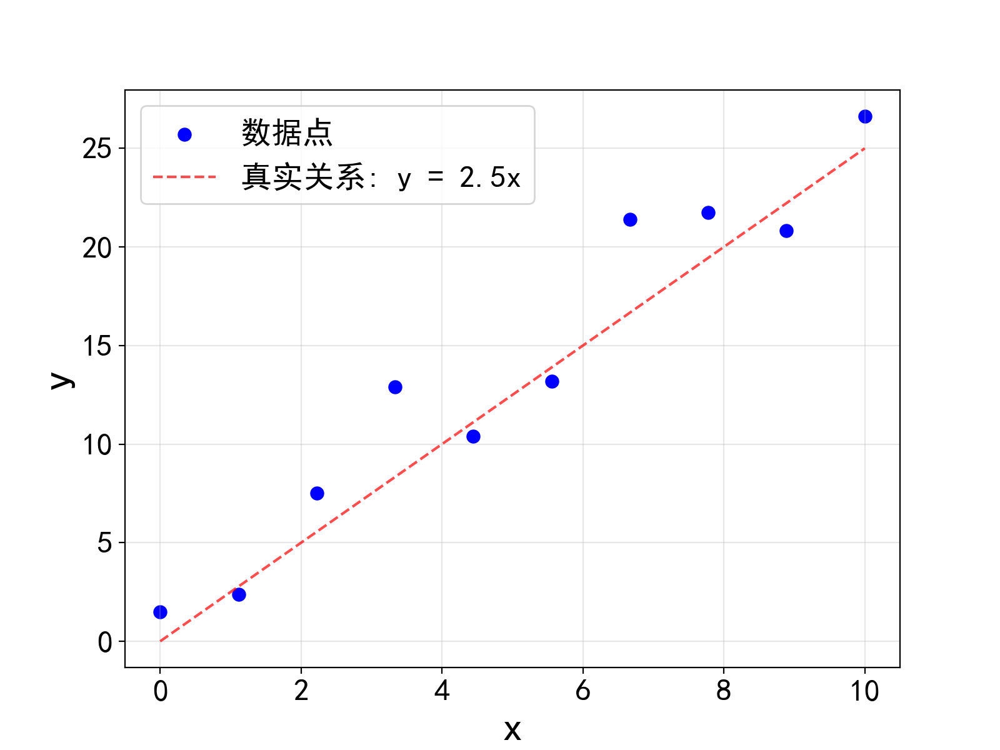
我们考虑一个简化的数据拟合问题, 如图所示, 假设我们有一组数据点 \{(x_i, y_i)\}, i=1,2,\cdots,N. 根据图中数据点的分布情况, 我们猜想这组数据大致符合正比例关系, 即 y_i = k x_i + n_i 其中 n_i 为噪声, k 为待定常数. 我们希望从数据中估计出 k 的具体取值.
为了评判在给定的参数 k 下上述模型对数据的拟合程度, 我们引入损失函数
L(k) = \frac{1}{N}\sum_{i=1}^{N} (y_i - k x_i)^2
这是一个关于 k 的函数, 也叫做均方误差(MSE, Mean Square Error). L(k) 的值越小表示 k 所对应的直线与数据点符合得越好. 因此我们的目标是找到使得 L(k) 最小的 k, 也就是求解函数 L(k) 的极值问题.
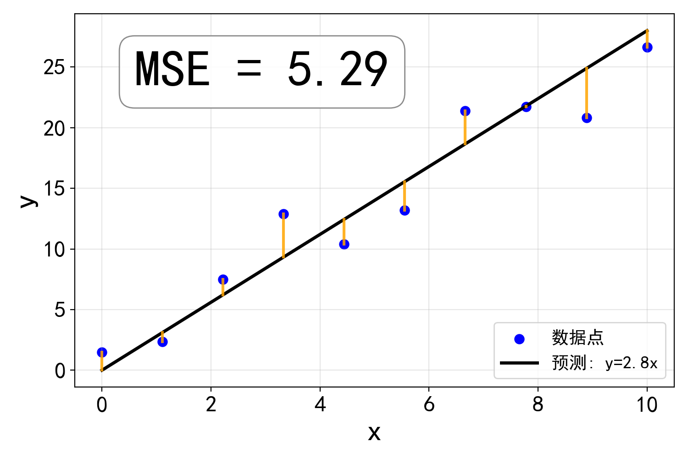
L(k) 的导数为 L'(k) = -\frac{2}{N} \sum_{i=1}^{N} x_i (y_i - k x_i)
满足 L'(k) = 0 的 k 就是函数 L(k) 的极值点. 不难验证 L(k) 是一个凸函数(比如利用凸函数的正加权求和还是凸函数的性质), 因此这个极值点是唯一的, 而且一定是极小值点. 对这个简单的例子而言, 极小值点所对应的 k^* 是可以显式解出来的, 但是对于更加复杂的函数, 求极值点的任务很可能需要借助数值的方法, 例如下面所介绍的梯度下降法.
梯度下降法是一种利用导数信息来寻找函数极小值点的数值算法. 这个过程就好像你在调一台老式收音机, 它只有一个旋钮 k 用来调频道. 你转动旋钮时, 耳朵会立刻听到声音的变化: 有时候, 往一个方向轻轻一转, 会发现杂音立刻变小了, 但也有时候, 刚一转动旋钮, 嗞嗞的噪声突然变大. 整个过程就像是在黑暗中摸索, 只能凭耳朵判断该往哪边走, 一边转旋钮, 一边听声音的变化, 一步步靠近那个最清晰的频道.
损失函数 L(k) 就表示收音机的杂音强度, 我们通过旋钮的微调和耳朵的感受就能够大致估计导数 L'(k), 而导数值能够为我们提供了修正 k 的方向信息: L'(k) > 0 表示噪声 L(k) 随着 k 增大而增大, 所以应该减小 k 来减小噪声 L(k); 反过来, L'(k) <0 表示噪声 L(k) 随着 k 增大而减小, 所以应该增大 k 来减小噪声 L(k), 最终如果找到 L'(k) = 0 的点就找到了噪声最小也就是最清晰的频道.
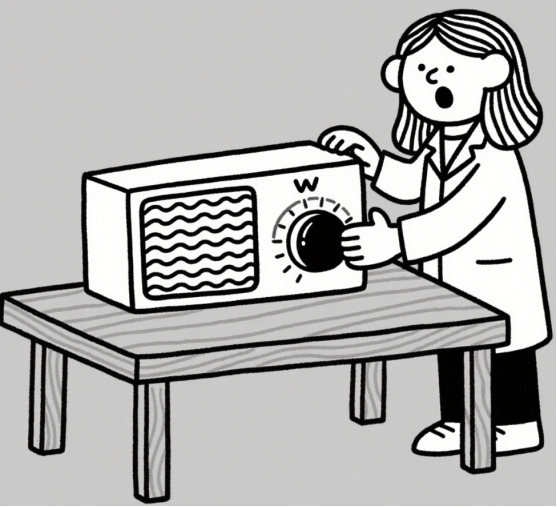
我们把上述调节收音机的过程写成算法, 就得到了梯度下降法: 梯度下降法算法步骤:
输入: 初始参数 k_0, 学习率 \eta, 收敛阈值 \epsilon
过程: 1. 初始化: t \leftarrow 0, k \leftarrow k_0 2. while |L'(k)| > \epsilon:
计算梯度: g \leftarrow L'(k) = -2 \sum_{i=1}^{N} x_i(y_i - kx_i)
更新参数: k \leftarrow k - \eta \cdot g
t \leftarrow t + 1
- end while
输出: 最优参数 k^*
收敛
当导数很接近 0 时(|L'(k)| \le \epsilon), 更新步长会非常小, 参数 k 的变化几乎停下来, 这时我们就找到了让 L(k) 最小的 k, 参数就收敛到了最优点.
学习速率
需要特别注意算法中的参数 \eta, 我们称它为学习速率, 因为它决定了 k 的更新步幅, \eta 的值是需要根据具体问题人为给定的:
- 如果 \eta 太大 → 你猛地把旋钮转过头, 直接跨过谷底, 来回震荡, 甚至跑到更高的山上
- 如果 \eta 太小 → 你像用牙签拨旋钮, 一次几乎没动, 走到谷底需要很久
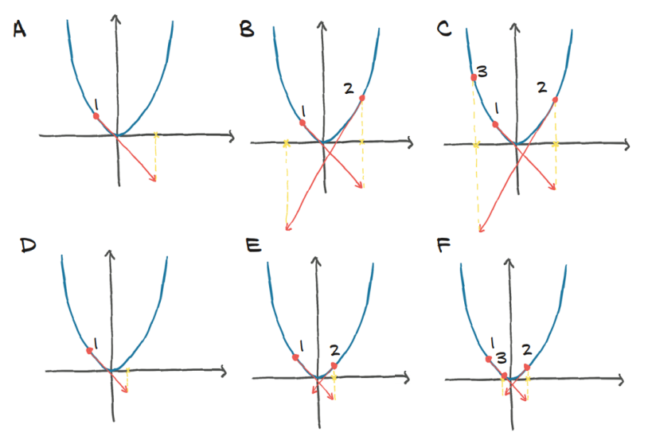
在上面的数据点拟合的例子中, 运用梯度下降法求解上述问题得到的 k 的拟合值如下图. 由于随机误差的存在, 在算法看来对数据拟合得最好的 k = 2.69, 与我们生成数据时所采用的 k=2.5 略有偏差, 在统计意义上这是完全合理的, 而且随着样本点个数 N 的增大, 随机误差的整体效果会逐渐减弱, 算法得到的 k 也会越来越接近真实值.
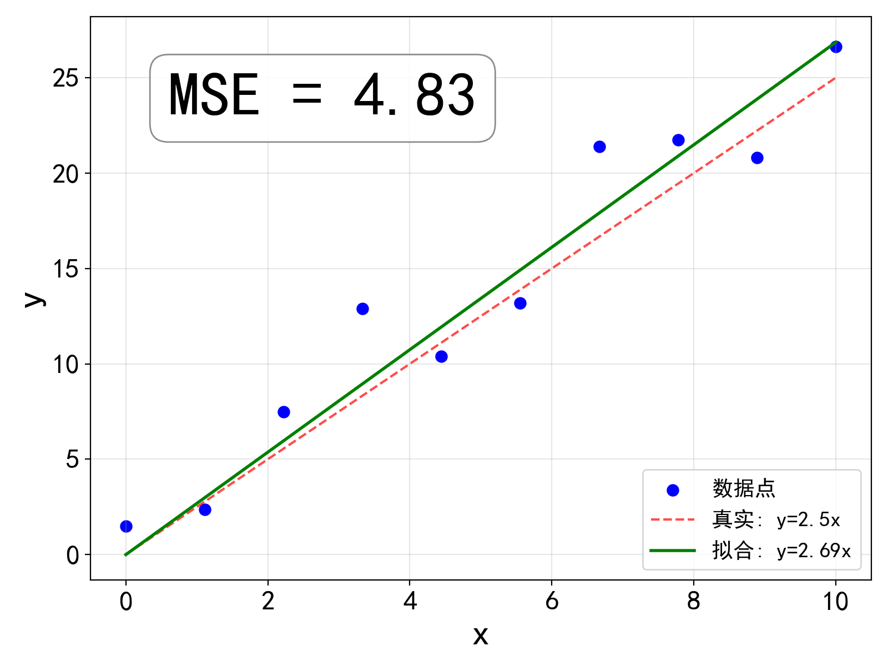
梯度下降法实例: nonconvex_landscape.ipynb
前面我们通过极限给出了导数的定义, 并指出导数的几何意义是函数某一点处切线的斜率. 通过计算函数切线的斜率, 我们可以判断函数的增减性及其极值.
接下来我们将介绍微分的概念, 并揭示微分与导数之间的朴实却深刻的联系. 微分是微积分的核心思想, 将在后续的课程中贯穿始终.
第六节 · 微分的概念
微分 (differential) 的意思是 无穷小的改变量 (infinitesimally small change), 莱布尼茨为微分创立了其专属符号 “d”, 例如 dx 表示变量 x 的微分, dy 表示变量 y 的微分. 与之对应的, 物理上经常用 \Delta x 表示一个很小的改变量, 比如一小段位移. 直观上看, \Delta x 和 dx 想传达的意思很相近, 都是很小的量, 但是在数学上它们是有区别的.
\Delta x 表示一个非常小但固定的数.
dx 则表示一个”无穷小量”, 它不再是一个固定的数, 而是蕴含了某个极限过程.
如图, 考虑一个做直线运动的物体, 它在经过一小段时间 \Delta t 之后位移的变化量为 \Delta s = s(t +\Delta t) - s(t). 此时我们考虑 \Delta t \to 0 的极限, 就得到时间的微分 dt 以及对应的位移的微分 ds.
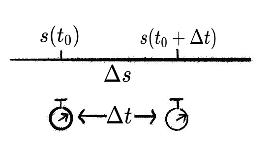
如图, 从原点位置以角度 \theta 发射一束激光, 设激光与直线 y = b 的交点坐标为 (x, b). 如果我们将发射角做一个微小的改变 \Delta \theta, 与之对应的激光光斑的位置会在 x-轴方向上发生了一个 \Delta x 的偏移. 此时我们考虑 \Delta \theta \to 0 的极限, 就得到角度的微分 d\theta 以及对应的x的微分 dx.
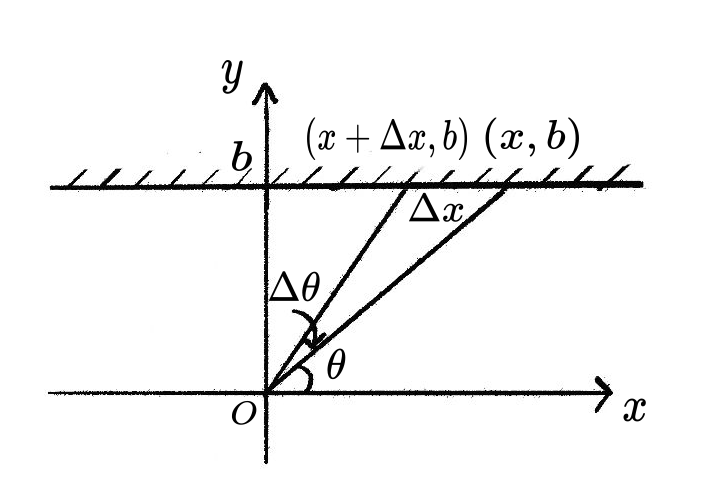
2.6.1 微分与导数
在研究实际问题的时候, 我们经常关心两个微分之间的关系. 例如, 设想我们需要控制一个机械手臂在黑板上画图, 粉笔移动一个小位移, 机械臂的各个关节也要相应的移动一个小量. 我们可以把关节移动的小量认为是 dx, 粉笔移动的小量认为是 dy. 很多时候我们关心两个微分之间的联动关系, 比如在机器人控制领域, 给定 dx 计算 dy 叫做正动力学, 给定 dy 计算 dx 叫做逆动力学. 又比如在例1中 dx 与 dt 的关系反映了物体的位移随时间的变化关系; 例2中 dx 与 d\theta 的关系反映了激光光斑的位置随发射角度之间的变化关系, 这些都是物理中所关心的量.
那么如何确定两个微分之间的关系呢? 如果我们能够写出两个变量之间所满足的函数关系, 很容易就可以得到这两个变量所对应的微分之间的关系, 这是微分学的一个重要成就.
一般的, 假定两个变量 x, y 满足函数关系 y = f(x), 则 dy = f'(x) dx.
对于匀速运动 s = s_0 + vt 和初速度为零的匀加速运动 s = s_0 + \frac{1}{2}at^2，利用微分公式分别写出位移微分 ds 与时间微分 dt 之间的关系，并说明线性函数情形下微分给出精确值的原因。
对函数 s = f(t) 应用微分公式 ds = f'(t)\,dt，分别对两个运动函数求导。
匀速运动：s = s_0 + vt，求导得 s'(t) = v，故
ds = v\,dt.
对于线性函数，\Delta s = v\Delta t 精确成立（无误差），因为线性函数的差分与微分完全相等：\Delta s - ds = 0。
匀加速运动：s = s_0 + \frac{1}{2}at^2，求导得 s'(t) = at，故
ds = at\,dt.
此时真实增量 \Delta s = at\Delta t + \frac{1}{2}a(\Delta t)^2，而微分预测值为 at\Delta t，误差为 \frac{1}{2}a(\Delta t)^2。当 \Delta t \to 0 时，误差趋于零，体现了”化曲为直”的思想。
激光从原点以角度 \theta 射出，与直线 y = b 的交点横坐标为 x = \dfrac{b}{\tan\theta}，激光飞行距离为 l = \dfrac{b}{\sin\theta}。利用微分公式，分别求 dx 与 d\theta、dl 与 d\theta 的关系，并由此计算 \dfrac{dx}{dl}。
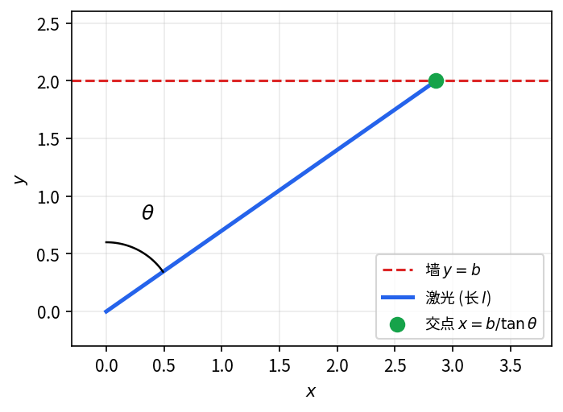
对 x 和 l 分别关于 \theta 求导，再用微分之比直接求 dx/dl。
dx 与 d\theta 的关系：
对 x = b/\tan\theta = b\cot\theta 求导：
\frac{dx}{d\theta} = -\frac{b}{\sin^2\theta},
故
dx = -\frac{b}{\sin^2\theta}\,d\theta.
dl 与 d\theta 的关系：
对 l = b/\sin\theta 求导：
\frac{dl}{d\theta} = -\frac{b\cos\theta}{\sin^2\theta},
故
dl = -\frac{b\cos\theta}{\sin^2\theta}\,d\theta.
计算 dx/dl（利用微分之比）：
\frac{dx}{dl} = \frac{-\dfrac{b}{\sin^2\theta}\,d\theta}{-\dfrac{b\cos\theta}{\sin^2\theta}\,d\theta} = \frac{1}{\cos\theta}.
因此 dx = \dfrac{1}{\cos\theta}\,dl，即出射角每变化 dl 长度时，光斑横坐标变化 \dfrac{1}{\cos\theta}\,dl。
接下来我们结合导数的定义来理解微分公式. 在上一章中, 我们曾从函数图像切线的角度出发, 借助极限给出导数的定义:
f'(x) = \lim_{\Delta x \to 0} \frac{f(x + \Delta x) - f(x)}{\Delta x}.
上式的分子就是 \Delta y. 因此形式上我们有
f'(x) = \lim_{\Delta x \to 0} \frac{\Delta y}{\Delta x} = \frac{dy}{dx}
由此可见, 当 \Delta x \to 0 时, 差分商 \displaystyle\frac{\Delta y}{\Delta x} 的极限正是微分之商 \displaystyle\frac{dy}{dx}.
在微积分的逻辑体系内, \displaystyle\frac{dy}{dx} 最初是一个整体符号代表导数. 事实上, 我们也常用符号 \dfrac{dy}{dx} 表示导数, 常见的表达方式包括:
\frac{dy}{dx} \sim y'(x)
\frac{df(x)}{dx} \sim f'(x)
\left. \frac{df(x)}{dx} \right\rvert_{x = x_0} \sim f'(x_0)
但这里我们形式上将 dx 和 dy 作为独立的“微分”概念, 从而将导数的定义式
\frac{dy}{dx} = f'(x)
变形成等式
dy = f'(x) dx
微分公式表明函数值 y 的微分与自变量 x 的微分呈线性关系, 它的背后体现了化曲为直的思想, 具体体现在
\begin{align*} &\boxed{dy = f'(x_0) dx} \\ &\quad \downarrow \\ &\boxed{\Delta y \approx f'(x_0) \Delta x} \\ &\quad \downarrow \\ &\boxed{f(x_0+ \Delta x) - f(x_0) \approx f'(x_0) \Delta x} \\ &\quad \downarrow \\ &\boxed{f(x_0+ \Delta x) \approx f(x_0) + f'(x_0) \Delta x} \end{align*}
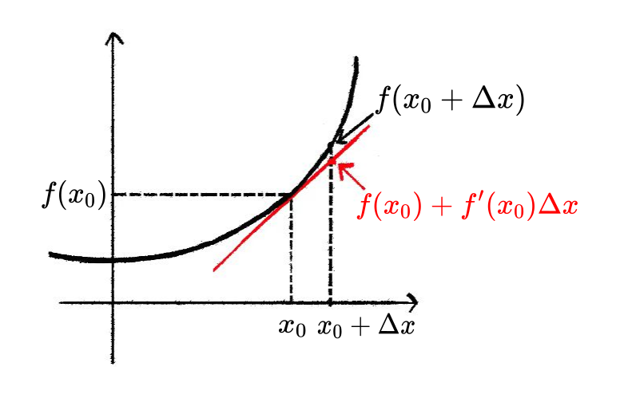
最后一个公式说明, 函数在 x_0 附近可近似看作一条过点 (x_0, f(x_0)), 斜率为 f'(x_0) 的直线. 在局部用一条直线来近似函数也就是所谓的化曲为直, 这是微积分中一个极其重要的思想.
基于微分符号所建立的导数定义与运算规则非常直观, 在后续课程中, 我们将进一步领略微分思想的强大力量, 并体会良好符号系统为数学带来的美感与实用价值.
第七节 · 借助微分计算导数
借助微分的思想和符号可以帮助我们去处理更加复杂的求导运算, 包括复合函数求导和隐函数求导.
2.7.1 复合函数求导的链式法则
非常重要!
若函数 y = f(u) 在点 u = g(x) 可导, 且 u = g(x) 在点 x 可导, 则: [f(g(x))]' = f'(g(x)) g'(x)
基于微分的思想, 链式法则可以直观的理解为: 分子分母同时乘以无穷小量 du, 得到
\frac{dy}{dx} = \frac{dy}{du} \cdot \frac{du}{dx}.
设函数 y = \mathrm{e}^{x^2}，求 \dfrac{dy}{dx}。
将 y = \mathrm{e}^{x^2} 看作复合函数，令中间变量 u = x^2，再用链式法则。
令 u = x^2，则 y = \mathrm{e}^u，故
\frac{dy}{dx} = \frac{dy}{du} \cdot \frac{du}{dx} = \mathrm{e}^u \cdot 2x = 2x\mathrm{e}^{x^2}.
设函数 y = \cos\dfrac{x^2-1}{3x}，求 \dfrac{dy}{dx}。
令 u = \dfrac{x^2-1}{3x}，分别求 \dfrac{dy}{du} 和 \dfrac{du}{dx}，再用链式法则合并。
令 u = \dfrac{x^2-1}{3x}，则 y = \cos u。
\frac{dy}{du} = -\sin u,
\frac{du}{dx} = \frac{(2x)(3x) - (x^2-1)(3)}{9x^2} = \frac{6x^2 - 3x^2 + 3}{9x^2} = \frac{x^2+1}{3x^2}.
由链式法则：
\frac{dy}{dx} = -\sin u \cdot \frac{x^2+1}{3x^2} = -\frac{x^2+1}{3x^2}\sin\frac{x^2-1}{3x}.
设 y = \ln\cos x，求 \dfrac{dy}{dx}。
令 u = \cos x，则 y = \ln u，用链式法则。
令 u = \cos x，则 y = \ln u。
\frac{dy}{dx} = \frac{dy}{du} \cdot \frac{du}{dx} = \frac{1}{\cos x} \cdot (-\sin x) = -\tan x.
设 y = \sqrt{1 + 3x^3}，求 \dfrac{dy}{dx}。
将 y = (1+3x^3)^{1/2} 视为复合函数，令 u = 1+3x^3，用链式法则。
令 u = 1+3x^3，则 y = u^{1/2}。
\frac{dy}{du} = \frac{1}{2}u^{-1/2} = \frac{1}{2\sqrt{1+3x^3}}, \quad \frac{du}{dx} = 9x^2.
由链式法则：
\frac{dy}{dx} = \frac{1}{2\sqrt{1+3x^3}} \cdot 9x^2 = \frac{9x^2}{2\sqrt{1+3x^3}}.
设 y = \ln\sin(2x^2)，求 \dfrac{dy}{dx}。
将函数分解为三层复合：y = \ln u，u = \sin v，v = 2x^2，逐层应用链式法则。
令 y = \ln u，u = \sin v，v = 2x^2。
\frac{dy}{dx} = \frac{1}{u} \cdot \cos v \cdot 4x = \frac{\cos(2x^2)}{\sin(2x^2)} \cdot 4x = 4x\cot(2x^2).
设 y = \mathrm{e}^{\cos\sqrt{x}}，求 y'。
将函数分解为三层复合：y = \mathrm{e}^u，u = \cos v，v = \sqrt{x}，逐层求导后相乘。
令 u = \cos\sqrt{x}，v = \sqrt{x}。
\frac{dy}{du} = \mathrm{e}^u = \mathrm{e}^{\cos\sqrt{x}}, \quad \frac{du}{dv} = -\sin v = -\sin\sqrt{x}, \quad \frac{dv}{dx} = \frac{1}{2\sqrt{x}}.
由链式法则：
y' = \mathrm{e}^{\cos\sqrt{x}} \cdot (-\sin\sqrt{x}) \cdot \frac{1}{2\sqrt{x}} = -\frac{\mathrm{e}^{\cos\sqrt{x}}\sin\sqrt{x}}{2\sqrt{x}}.
设 y = \cos 2x \cdot \cos^2 x，求 y'。
用乘积法则求导，对 \cos 2x 和 \cos^2 x 分别求导，最后利用二倍角公式化简。
\begin{aligned} y' &= (\cos 2x)'\cos^2 x + \cos 2x(\cos^2 x)' \\ &= -2\sin 2x\cos^2 x + \cos 2x \cdot (-2\sin x\cos x) \\ &= -2\cos x(\sin 2x\cos x + \cos 2x\sin x) \\ &= -2\cos x\sin 3x. \end{aligned}
（最后一步利用了 \sin(2x + x) = \sin 2x\cos x + \cos 2x\sin x。）
2.7.2 隐函数求导
隐函数将自变量 x 和函数值 y 通过某个等式联系起来, 从这个等式里我们可以推测 dy 和 dx 之间的关系, 一些复杂的函数的导数通过隐函数更容易计算.
求由方程 \ln y + x^2y - 1 = 0 所确定的隐函数的导数 \dfrac{dy}{dx}。
对方程两边关于 x 求导，注意 y 是 x 的函数，对含 y 的项使用链式法则，再解出 \dfrac{dy}{dx}。
对方程两边关于 x 求导：
\frac{1}{y}\frac{dy}{dx} + 2xy + x^2\frac{dy}{dx} = 0.
合并含 \dfrac{dy}{dx} 的项：
\left(\frac{1}{y} + x^2\right)\frac{dy}{dx} = -2xy.
解得（y \neq 0）：
\frac{dy}{dx} = -\frac{2xy}{\frac{1}{y}+x^2} = -\frac{2xy^2}{1+x^2y}.
求由方程 y^3 + 3y - x^2 - 2x^5 = 0 所确定的隐函数在 x = 0 处的导数 \left.\dfrac{dy}{dx}\right|_{x=0}。
先对方程两边关于 x 求导得到一般的导数公式，再求 x=0 时对应的 y 值，最后代入求值。
对方程两边关于 x 求导：
3y^2\frac{dy}{dx} + 3\frac{dy}{dx} - 2x - 10x^4 = 0.
解得：
\frac{dy}{dx} = \frac{2x + 10x^4}{3y^2 + 3}.
当 x = 0 时，代入原方程 y^3 + 3y = 0，即 y(y^2+3) = 0，实数解为 y = 0。
代入导数公式：
\left.\frac{dy}{dx}\right|_{x=0} = \frac{0}{0+3} = 0.
求双曲线 \dfrac{x^2}{9} - \dfrac{y^2}{4} = 1 在点 (3\sqrt{2},\, 2) 处的切线方程。
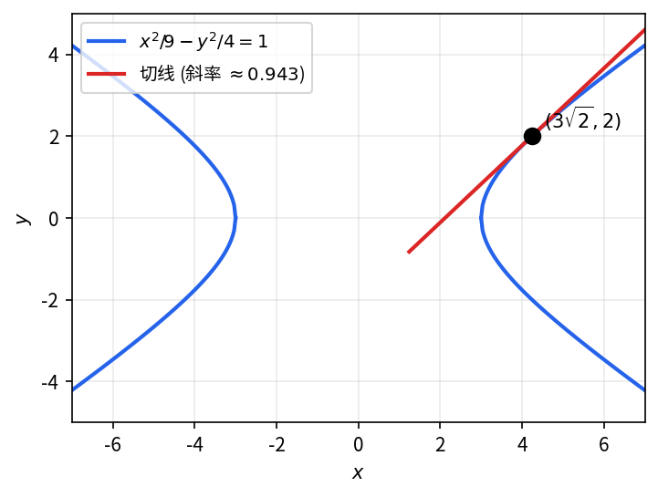
对双曲线方程两边关于 x 隐式求导，解出 \dfrac{dy}{dx}，代入切点坐标求斜率，再写切线方程。
对方程两边关于 x 求导：
\frac{2x}{9} - \frac{2y}{4}\frac{dy}{dx} = 0 \implies \frac{dy}{dx} = \frac{2x}{9y}.
在点 (3\sqrt{2}, 2) 处的斜率：
k = \frac{2 \times 3\sqrt{2}}{9 \times 2} = \frac{\sqrt{2}}{3}.
切线方程：
y - 2 = \frac{\sqrt{2}}{3}(x - 3\sqrt{2}) \implies \sqrt{2}x - 3y = 0.
2.7.3 反函数求导
反函数求导可以看作是隐函数求导的特例.
设 y = \arcsin x（-1 < x < 1），用隐函数求导法求 y'。
由 y = \arcsin x 得 x = \sin y，对两边关于 x 求导，利用 \cos y > 0（当 -\pi/2 < y < \pi/2）将结果用 x 表示。
由 y = \arcsin x 得 x = \sin y。对两边关于 x 求导：
1 = \cos y \cdot \frac{dy}{dx}.
当 -\dfrac{\pi}{2} < y < \dfrac{\pi}{2} 时，\cos y > 0，故 \cos y = \sqrt{1-\sin^2 y} = \sqrt{1-x^2}。
因此：
\frac{dy}{dx} = (\arcsin x)' = \frac{1}{\sqrt{1-x^2}}.
类似可得 (\arccos x)' = -\dfrac{1}{\sqrt{1-x^2}}。
设 y = \arctan x（x \in \mathbb{R}），用隐函数求导法求 y'。
由 y = \arctan x 得 x = \tan y，对两边关于 x 求导，利用三角恒等式 \sec^2 y = 1 + \tan^2 y 将结果用 x 表示。
由 y = \arctan x 得 x = \tan y。对两边关于 x 求导：
1 = \sec^2 y \cdot \frac{dy}{dx}.
利用恒等式 \sec^2 y = 1 + \tan^2 y = 1 + x^2，故：
\frac{dy}{dx} = (\arctan x)' = \frac{1}{1+x^2}.
类似可得 (\text{arccot}\, x)' = -\dfrac{1}{1+x^2}。
求 y = (x^2)^{\ln x}（x > 0）的导数。
两边取对数，利用 \ln y = 2(\ln x)^2，再对两边关于 x 求导。
两边取对数：
\ln y = \ln x \cdot \ln(x^2) = 2(\ln x)^2.
两边对 x 求导：
\frac{1}{y}y' = 4\ln x \cdot \frac{1}{x} = \frac{4\ln x}{x}.
故：
y' = y \cdot \frac{4\ln x}{x} = (x^2)^{\ln x} \cdot \frac{4\ln x}{x}.
求 y = \sqrt{\dfrac{(x-1)(x-2)}{(x-4)(x-5)}} 的导数（设 x > 5）。
两边取对数，将根号和乘除变成加减，再对两边求导。
设 x > 5，两边取对数：
\ln y = \frac{1}{2}\left[\ln(x-1) + \ln(x-2) - \ln(x-4) - \ln(x-5)\right].
两边对 x 求导：
\frac{y'}{y} = \frac{1}{2}\left(\frac{1}{x-1} + \frac{1}{x-2} - \frac{1}{x-4} - \frac{1}{x-5}\right).
故：
y' = \frac{1}{2}\sqrt{\frac{(x-1)(x-2)}{(x-4)(x-5)}}\left(\frac{1}{x-1} + \frac{1}{x-2} - \frac{1}{x-4} - \frac{1}{x-5}\right).
2.7.4 更多的高阶导数计算
微分的思想也可以帮助我们来理解和计算高阶导数, 结合链式法则, 我们可以进行更加复杂的计算.
- f'(x), f''(x), f'''(x), f^{(n)}(x), \cdots.
- \displaystyle \frac{d}{dx}f(x), \displaystyle \frac{d^2}{dx^2}f(x), \displaystyle \frac{d^3}{dx^3}f(x), \displaystyle \frac{d^{n}}{dx^{n}}f(x), \cdots.
设 y = \cos ax，求 y''。
先求一阶导数 y'，再对 y' 求导得 y''。
y' = -a\sin ax.
y'' = -a \cdot a\cos ax = -a^2\cos ax.
求指数函数 y = \mathrm{e}^{kx}（k 为常数）的 n 阶导数。
逐步计算一阶、二阶、三阶导数，观察规律，归纳出一般公式。
y' = k\mathrm{e}^{kx}, \quad y'' = k^2\mathrm{e}^{kx}, \quad y''' = k^3\mathrm{e}^{kx}, \quad y^{(4)} = k^4\mathrm{e}^{kx}.
观察规律：每求导一次多乘一个系数 k，故
y^{(n)} = k^n\mathrm{e}^{kx}.
求由方程 x + 2y - \dfrac{1}{3}\cos y = 0 所确定的隐函数的二阶导数 \dfrac{d^2y}{dx^2}。
先对原方程关于 x 求导，解出一阶导数 \dfrac{dy}{dx}；再对 \dfrac{dy}{dx} 的表达式关于 x 求导，代入一阶导数化简。
对原方程两边关于 x 求导：
1 + 2\frac{dy}{dx} + \frac{1}{3}\sin y \cdot \frac{dy}{dx} = 0,
\frac{dy}{dx}\left(2 + \frac{1}{3}\sin y\right) = -1,
\frac{dy}{dx} = \frac{-3}{6+\sin y}.
对一阶导数再关于 x 求导：
\frac{d^2y}{dx^2} = \frac{3\cos y \cdot \frac{dy}{dx}}{(6+\sin y)^2} = \frac{3\cos y \cdot \frac{-3}{6+\sin y}}{(6+\sin y)^2} = \frac{-9\cos y}{(6+\sin y)^3}.
最后我们回过头来看一下图2中所给出的例子. 上面我们已经得到 dx = -b \frac{1}{\sin^2 \theta}d\theta, \quad dl = -b \frac{\cos \theta}{\sin^2 \theta}d\theta
如果我们希望计算 dx 与 dl 的关系, 即 \dfrac{dx}{dl}, 可以采用以下两种方法:
方法一: 建立 x 与 l 的显式函数关系
由 l = \dfrac{b}{\sin \theta} 可得 \sin \theta = \dfrac{b}{l}, 代入 x = \dfrac{b}{\tan \theta} = b\dfrac{\cos \theta}{\sin \theta} 得: \begin{aligned} x &= b \cdot \frac{\cos \theta}{\sin \theta} \\ & = b \cdot \frac{\sqrt{1 - \sin^2 \theta}}{\sin \theta}\\ & = b \cdot \frac{\sqrt{1 - (b/l)^2}}{b/l} \\ & = l \cdot \sqrt{1 - \left(\frac{b}{l}\right)^2} \end{aligned}
对 l 求导得: \begin{aligned} \frac{dx}{dl} &= \sqrt{1 - \left(\frac{b}{l}\right)^2} + l \cdot \frac{1}{2\sqrt{1 - (b/l)^2}} \cdot \frac{2b^2}{l^3}\\ & = \frac{1}{\sqrt{1 - (b/l)^2}} \\ & = \frac{1}{\cos \theta}\ \end{aligned}
因此 dx = \dfrac{1}{\cos \theta} dl.
方法二: 直接利用微分之比
由 dx 和 dl 的表达式直接相除: \frac{dx}{dl} = \frac{-b \frac{1}{\sin^2 \theta}d\theta}{-b \frac{\cos \theta}{\sin^2 \theta}d\theta} = \frac{1}{\cos \theta}
同样得到 dx = \dfrac{1}{\cos \theta} dl.
两种方法结果一致, 但第二种方法通过直接操作微分, 避免了复杂的函数关系和求导过程, 显示了微分运算的简洁性与灵活性. 在实际问题中, 灵活运用微分关系可以大大简化计算, 这正是微分思想的强大之处.
第八节 · 借助微分计算极限
借助微分的思想和符号还可以帮助我们去理解一个较为实用的求极限方法: 洛必达法则.
2.8.1 洛必达法则
洛必达法则是用于计算在不定形式 (未定式, 即: \displaystyle\frac{0}{0}或\displaystyle\frac{\infty}{\infty}) 下极限的有力工具.
如果函数 f(x) 和 g(x) 在点 x=c 的某个邻域内可导, 且在该点附近有:
- f(c) = 0 且 g(c) = 0 (或 f(x) 和 g(x) 的极限趋于 \infty).
- g'(x) \ne 0.
那么
\lim_{x\rightarrow c} \frac{f(x)}{g(x)} = \lim_{x\rightarrow c} \frac{f'(x)}{g'(x)},
前提是后者的极限存在.
注意: 有时可能需要多次应用洛必达法则, 特别是当 \displaystyle\frac{f'(x)}{g'(x)} 仍然是 \displaystyle\frac{0}{0} 或 \displaystyle\frac{\infty}{\infty} 的形式时.
下面我们借助微分的思想来理解洛必达法则.
当 x 充分接近 c 时, 我们可以用函数的线性近似 (即微分) 来替代原函数. 由于 f(c) = g(c) = 0, 在点 c 附近有:
f(x) \approx f(c) + f'(c)(x - c) = f'(c)(x - c)
g(x) \approx g(c) + g'(c)(x - c) = g'(c)(x - c)
因此, 原比式的极限可近似表示为:
\frac{f(x)}{g(x)} \approx \frac{f'(c)(x - c)}{g'(c)(x - c)} = \frac{f'(c)}{g'(c)}
当 x \to c 时, 这一近似将趋于精确. 这正是洛必达法则的直观含义——在极限过程中, 分子与分母的变化趋势由它们在该点的导数之比决定.
对于 \infty/\infty 型未定式, 虽然不能直接使用上述推导, 但微分思想仍然适用: 此时我们比较的是 f(x) 与 g(x) 在 x \to c 过程中的相对变化速率, 而导数正是刻画这种瞬时变化率的工具.
需要强调的是, 上述推导仅为理解洛必达法则提供了直观的几何图像. 严格证明需依赖柯西中值定理, 该定理能够将 \dfrac{f'(c)}{g'(c)} 替换成 \dfrac{f'(\xi)}{g'(\xi)}, 其中 \xi 位于 x 与 c 之间, 从而得到使用起来更加灵活的洛必达法则. 这部分内容我们放在了后面的章节中.
求 \displaystyle\lim_{x \to 0} \frac{\sin ax}{\sin bx}（b \neq 0）。
当 x \to 0 时，分子分母均趋于零，构成 0/0 型未定式，直接用洛必达法则。
\lim_{x \to 0} \frac{\sin ax}{\sin bx} = \lim_{x \to 0} \frac{a\cos ax}{b\cos bx} = \frac{a}{b}.
求 \displaystyle\lim_{x \to 1} \frac{x^3 - 3x + 2}{x^3 - x^2 - x + 1}。
当 x \to 1 时，分子分母均为零（0/0 型），需多次应用洛必达法则，但每次应用前先验证仍是未定式。
\lim_{x \to 1} \frac{x^3-3x+2}{x^3-x^2-x+1} = \lim_{x \to 1} \frac{3x^2-3}{3x^2-2x-1} = \lim_{x \to 1} \frac{6x}{6x-2} = \frac{6}{4} = \frac{3}{2}.
注意：第二次求导后 \displaystyle\lim_{x\to 1}\frac{6x}{6x-2} = \frac{3}{2} 已不是未定式，不能再次应用洛必达法则。
求 \displaystyle\lim_{x \to 0} \frac{x - \sin x}{x^3}。
0/0 型，需连续应用洛必达法则三次，每次都先确认仍是未定式。
\lim_{x \to 0} \frac{x-\sin x}{x^3} = \lim_{x \to 0} \frac{1-\cos x}{3x^2} = \lim_{x \to 0} \frac{\sin x}{6x} = \frac{1}{6}.
求 \displaystyle\lim_{x \to +\infty} \frac{\dfrac{\pi}{2} - \arctan x}{\dfrac{1}{x}}。
当 x \to +\infty 时，分子 \dfrac{\pi}{2} - \arctan x \to 0，分母 \dfrac{1}{x} \to 0，构成 0/0 型，直接用洛必达法则。
\lim_{x \to +\infty} \frac{\frac{\pi}{2}-\arctan x}{\frac{1}{x}} = \lim_{x \to +\infty} \frac{-\frac{1}{1+x^2}}{-\frac{1}{x^2}} = \lim_{x \to +\infty} \frac{x^2}{1+x^2} = 1.
求 \displaystyle\lim_{x \to +\infty} \frac{\ln x}{x^n}（n > 0）。
\infty/\infty 型未定式，直接用洛必达法则。
\lim_{x \to +\infty} \frac{\ln x}{x^n} = \lim_{x \to +\infty} \frac{\frac{1}{x}}{nx^{n-1}} = \lim_{x \to +\infty} \frac{1}{nx^n} = 0.
这说明对数函数趋于无穷的速度比任何正幂次的幂函数都慢。
求 \displaystyle\lim_{x \to +\infty} \frac{x^n}{e^{\lambda x}}（n 为正整数，\lambda > 0）。
\infty/\infty 型，对分子连续求导 n 次直到分子变为常数，期间分母始终是指数函数。
相继对分子分母求导 n 次：
\lim_{x \to +\infty} \frac{x^n}{e^{\lambda x}} = \lim_{x \to +\infty} \frac{nx^{n-1}}{\lambda e^{\lambda x}} = \cdots = \lim_{x \to +\infty} \frac{n!}{\lambda^n e^{\lambda x}} = 0.
这说明指数函数趋于无穷的速度比任何幂函数都快。
求 \displaystyle\lim_{x \to 0^+} x^n \ln x（n > 0）。
将 0 \cdot \infty 型转化为 \infty/\infty 型，再用洛必达法则。
x^n \ln x = \frac{\ln x}{x^{-n}}.
当 x \to 0^+ 时，上式是 \infty/\infty 型。应用洛必达法则：
\lim_{x \to 0^+} x^n \ln x = \lim_{x \to 0^+} \frac{\ln x}{x^{-n}} = \lim_{x \to 0^+} \frac{\frac{1}{x}}{-nx^{-n-1}} = \lim_{x \to 0^+}\left(-\frac{x^n}{n}\right) = 0.
求 \displaystyle\lim_{x \to \frac{\pi}{2}} (\sec x - \tan x)。
将 \infty - \infty 型通分转化为 0/0 型，再用洛必达法则。
\sec x - \tan x = \frac{1-\sin x}{\cos x}.
当 x \to \dfrac{\pi}{2} 时，上式是 0/0 型。
\lim_{x \to \frac{\pi}{2}} \frac{1-\sin x}{\cos x} = \lim_{x \to \frac{\pi}{2}} \frac{-\cos x}{-\sin x} = 0.
求 \displaystyle\lim_{x \to 0^+} x^x。
0^0 型，取对数转化为 0 \cdot \infty 型，再利用前一个极限结论。
设 y = x^x，则 \ln y = x\ln x。
当 x \to 0^+ 时，\ln y = x\ln x 是 0 \cdot \infty 型，由前面的结论（\lim_{x\to 0^+} x\ln x = 0，取 n=1）：
\lim_{x \to 0^+} \ln y = 0.
因此：
\lim_{x \to 0^+} x^x = \lim_{x \to 0^+} \mathrm{e}^{\ln y} = \mathrm{e}^0 = 1.
求 \displaystyle\lim_{x \to 0} \frac{\tan x - x}{x^2 \sin x}。
先用等价无穷小 \sin x \sim x（x \to 0）替换分母中的 \sin x，简化分母后再用洛必达法则。
当 x \to 0 时，\sin x \sim x，故：
\lim_{x \to 0} \frac{\tan x - x}{x^2\sin x} = \lim_{x \to 0} \frac{\tan x - x}{x^3}.
对 0/0 型连续应用洛必达法则：
= \lim_{x \to 0} \frac{\sec^2 x - 1}{3x^2} = \lim_{x \to 0} \frac{2\sec^2 x\tan x}{6x} = \frac{1}{3}\lim_{x \to 0}\frac{\tan x}{x} = \frac{1}{3}.
后面的章节中, 我们会介绍更加强大的计算极限的工具—泰勒展开. 而泰勒展开体现的也是微分的思想.